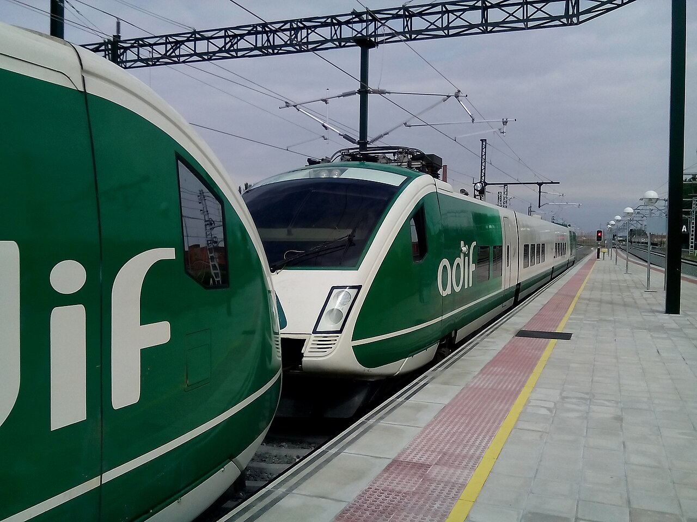
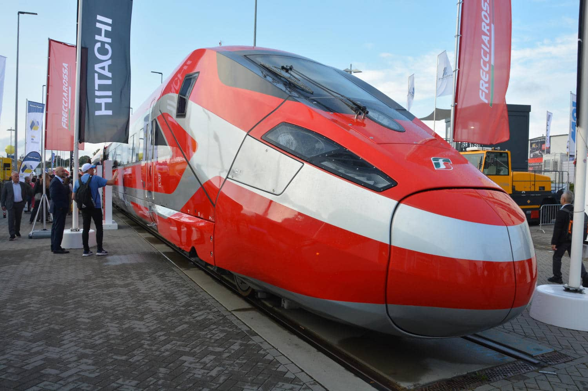
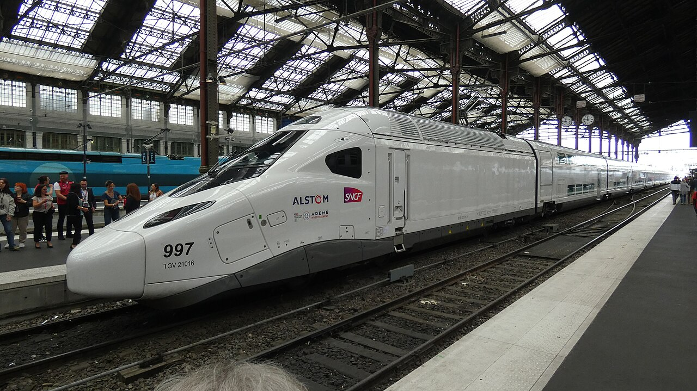
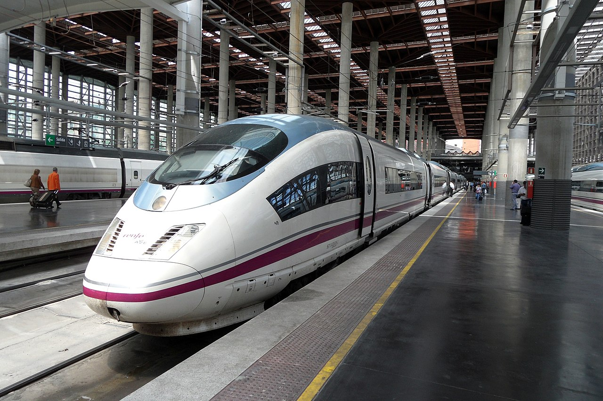

Normativa.:
Reglamento Orgánico 6/20211 de los Distritos (R.O.D.) del Ayuntamiento de Madrid
Reglamento Orgánico de los Distritos de la Ciudad de Madrid | BOAM 8910 junio 2021 PDF
Normativa del Ayuntamiento de Madrid R.O.D. BOAM 8910 junio 2021 reducida PDF
Presupuestos participativos | BOAM nº 8917 (25/06/2021) PDF
Real Decreto 2188/1995, de 28 de diciembre, régimen del control interno PDF
Extracto de los acuerdos adoptados JMD de Usera en BOAM nº 9005 (28/10/2021)
BOCM-8419_1218 17/06/2019 número, denominación y competencias de las Áreas PDF
BOCM-20210619-1 Consejería de Sanidad | Centros 3º Edad | Hosteleria | Fiestas PDF
BOAM 22 junio 2021 | Boletín Oficial del Ayuntamiento de Madrid PDF
BOAM - Modificación asistencia sesiones juntas municipales distrito
Estrategia de localización de los ODS (Objetivos de Desarrollo Sostenible)
Reglamento Orgánico Pleno consolidado V2.doc PDF
Estrategia de localización de los ODS (Objetivos de Desarrollo Sostenible)
Ley Orgánica 3/1986 de Medidas Especiales en Materia de Salud Pública
Procedimiento para la instalación de cámaras de videovigilancia en espacios públicos
Legislación | CCPM Colectivo Profesional de Policía Municipal
ORDENANZAS FISCALES Y PRECIOS PÚBLICOS MUNICIPALES
EXPEDIENTE: 113/2021/01663 PLIEGO DE PRESCRIPCIONES TÉCNICAS QUE HA DE REGIR EL ACUERDO MARCO DE LAS OBRAS DE REFORMA, REPARACIÓN Y CONSERVACIÓN DEL CONJUNTO DE EDIFICIOS Y ESPACIOS PÚBLICOS, CUYA COMPETENCIA CORRESPONDE AL DISTRITO DE USERA DEL AYUNTAMIENTO DE MADRID
LCREM Ley Capitalidad y Régimen Especial de Madrid Ley 22/2206, de 4 de julio
LBRL Ley Reguladora de las Bases de Régimen Local Ley 7/1985, de 2 de abril
LTSV Ley sobre Tráfico, Circulación de Vehículos a Motor y Seguridad Vial Real Decreto Legislativo 6/2015, de 30 de octubre
Acuerdos de la Villa. Covid-19 10 julio 2020
BOAM - Convocatoria uso recintos feriales en navidad - Mercadillos Navideños
Ordenanza Municipal Reguladora de la Venta Ambulante 31/12/2022
Cibelex. Base de Datos de Normativa Municipal
Ordenanza Reguladora de la Publicidad Exterior
Movilidad
Borja Carabante Delegado de Urbanismo, Medio Ambiente y Movilidad del Ayto. de Madrid. Segundo Teniente de Alcalde | twitter @bcarabante
Ignacio de Benito Pérez | @ignaciobenitop
Concejal del Ayuntamiento de Madrid. Portavoz Medio Ambiente y Movilidad. Educación. Villa de Vallecas, Villaverde y Usera
El Área de Movilidad y Transporte engloba actuaciones encaminadas a garantizar una movilidad sostenible, tanto a nivel público como privado, fomentando el uso del transporte público, la movilidad peatonal y el uso de la bicicleta y mejorando el tráfico, las infraestructuras para la movilidad y el aparcamiento.
Se desarrollan sobre:
La circulación de vehículos y peatones y, en general la movilidad en las vías públicas y túneles urbanos a través del Centro de Gestión de la Movilidad y mediante el Cuerpo de Agentes de Movilidad.
La señalización viaria, fija (verticales y horizontales) y especial.
Las Zonas de Estacionamiento Regulado (S.E.R.), las Áreas de Prioridad Residencial (A.P.R.) o de Circulación Restringida.
La grúa municipal y los vehículos abandonados.
Los aparcamientos de titularidad municipal.
La movilidad ciclista: BiciMad y carriles bici.
Los Autobuses: el transporte público urbano colectivo de superficie.
El Taxi y la Oficina Municipal del Taxi.
Los transportes especiales (escolar y de menores, de vertidos y escombros, de servicio de mudanzas) y la carga y descarga en la Ciudad de Madrid.
Los Intercambiadores de Transporte, en coordinación con el Consorcio Regional de Transportes.
Comisión de Movilidad Aérea Urbana Creación
Marco normativo que regule el tráfico de aeronaves no tripuladas
La Comunidad de Madrid licita por casi 30 millones la construcción del nuevo Intercambiador de Conde de Casal
La Comunidad de Madrid impulsa un nuevo nodo de transporte intermodal en el sureste de la capital con una inversión cercana a los 30 millones, financiada con fondos europeos
Parkings disuarios en Madrid: los 14 aparcamientos para Madrid 360
Aparcar por un euro al mes en un parking municipal del centro de Madrid: el Ayuntamiento abre solicitudes para el de Cortes Madrid cuenta con 18 aparcamientos públicos rotacionales y 37 aparcamientos públicos mixtos
El negocio de los parkings públicos de Madrid: las empresas pagan 170 euros por plaza y facturan 2.600 por cada una
Madrid libra una nueva batalla existencial en su proceso de turistificación: la invasión de los tuk tuk
Ordenanza de Movilidad Sostenible (OMS)
Ordenanza de Movilidad Sostenible PDF | Nuevo 21 septiembre 2021
Ordenanza de Movilidad Sostenible PDF | BOAM 8.979 21 de septiembre de 2021
Ordenanza de Movilidad Sostenible anteproyecto 19 agosto 2021 madrid.es
Ordenanza de Movilidad Sostenible anteproyecto 19 agosto 2021 -europapress.es
Ordenanza de Movilidad Sostenible anteproyecto 19 agosto 2021 -carrilbus.com
Ordenanza de Movilidad Sostenible anteproyecto 19 agosto 2021 -noticiasdemadrid
Ordenanza de Movilidad Sostenible anteproyecto 19 agosto 2021 -gacetinmadrid.com
Ordenanza de Movilidad Sostenible indice calles nuevas SER 2021 -larazon.es
Losas /adoquines fabricante
Descubierto cuál es el pavimento de hormigón que tanto gusta de Joaquin Costa.
Es de una empresa llamada Quadro.
También se va a poner en el entorno del Bernabéu.
De ese mismo fabricante es el suelo que se está instalando en Olavide-Trafalgar
Entra en vigor Madrid Central | Distrito Centro -restricciones
Almeida aprueba Madrid Central permite 45.000 coches más con votos díscolos MM
Un millón vehículos madrileños no podrán circular libremente por 23 ciudades CAM
Ayto. reclamará a Pedro Sánchez construcción “cuanto antes” del Bus-VAO A-42
Ordenanza de movilidad sostenible ‘Madrid 360’
MADRID 360estrategia para cumplir objetivos de calidad del aire de la UE
Mapa de Madrid 360: restricciones y zonas de bajas emisiones del nuevo Madrid Central
Madrid 360 * Zonas de bajas emisiones
Madrid 360 Cumplimiento según Almeida 90% de las 231 medidas se han ejecutado
estacionamiento de los vehículos de movilidad personal (VMP)
Detalles de las 21 peatonalizaciones
PMR | Persona con Movilidad Reducida
TEPMR (tarjeta de estacionamiento para personas con movilidad reducida)
Madrid destinará 1 millón de euros a estudiar la situación de sus 13.000 plazas de aparcamiento PMR (Personas Movilidad Reducida) tras la apertura de diligencias por la Fiscalía
ZPAE | Zona de Protección Acústica Especial
Ordenanza de Protección contra la Contaminación Acústica y Térmica
Ordenanza de Protección contra la Contaminación Acústica y Térmica (OPCAT)
Así funciona Multacar: la máquina de multar del Ayto. Madrid que no tiene ni la DGT
VMP (Vehículos de Movilidad Personal)
permisos de acceso y circulación por MZBE (Madrid ZBE)
TEPMR (tarjeta de estacionamiento para personas con movilidad reducida)
SGMZBE (Sistema de gestión de accesos a Madrid ZBE)
SER (Servicio de Estacionamiento Regulado)
OFSER (Ordenanza Fiscal Reguladora de la Tasa por Estacionamiento de Vehículos en determinadas zonas de la capital)
ZAV (Zonas de Aparcamiento Vecinal)
Estudio de demanda “PLAZA DE LAS TIZAS” (2017)
Dirección General de Planificación e Infraestructuras de Movilidad
'Parkings' subterráneos para desatascar 40 barrios saturados de Madrid (15/06/2023)
Madrid suprime sus Zonas Aparcamiento Vecinal (ZAV) pero el SER se podrá extender a 20 barrios más
Zonas de Aparcamiento Vecinal (ZAV) anulado
Calles de Madrid que pasarán a SER | Servicio de Estacionamiento Regulado
Madrid habilitará plazas exclusivas y gratuitas para la distribución urbana de mercancías en aparcamientos públicos del centro
Madrid iba a cumplir en 2022 con la directiva comunitaria de calidad del aire y que el sector de transporte y distribución de mercancías es esencial para la capital y su economía.
Representa el 6 % del PIB de la Comunidad de Madrid (12.000 millones de euros al año) y ocupa a 120.000 trabajadores.
Además, Centro es el distrito con más actividad empresarial de la ciudad: según el censo municipal hay 20.318 empresas y locales registrados.
Sin embargo, el Tribunal Superior de Justicia de Madrid, atendiendo a un recurso presentado por Más Madrid y el Partido Socialista, tumbó la moratoria en septiembre y, desde el próximo 1 de enero, estos vehículos tendrán que estacionar en un aparcamiento municipal para poder entrar en el distrito Centro.
68 enmiendas aprobadas ayer en la Comisión Extraordinaria de Medio Ambiente y Movilidad
Normativa del Ayuntamiento de Madrid agosto 2021- BOE.es
Servicio de Estacionamiento Regulado (SER) Lunes a viernes, no festivos: 9:00 a 21:00
Sábados: de 9:00 a 15:00 horas. Domingos y festivos: Sin servicio, no se paga.
Aparcamientos para residentes (PAR)
Aparcamientos para residentes (PAR) 2
CÓDIGOS APARCAMIENTOS.:
1201 Tomelloso | 1202 Manuel Noya | 1204, 1205 Matilde Gayo | 1207, Ortiz Campos? Rafael Ybarra
Vehículos de Movilidad Personal (VMP) bicicletas y patinetes | Vehículos Movilidad Urbana (VMU)
Ordenanza de Movilidad para la ciudad de Madrid vigente
Plan Estratégico de Seguridad Vial 2021-2030
BOAM nº 9025 25 noviembre 2021 Plan Estratégico de Seguridad Vial 2021-2030
Firmas y vandalismo contra los nuevos parquímetros en Puerta del Ángel:
paso de peatones – ACCIDENTES DE TRAFICO Y SEGURIDAD VIAL
Movilidad peatonal: las aceras
Almeida renuncia beneficio 18 millones al privatizar párking municipal junto a la Gran Vía
Movilidad peatonal: las aceras @Lime_ESP
Los patinetes, o vehículos de movilidad personal (VMP) están a día de hoy considerados como vehículos a motor y como tal se encuentran regulados en el Reglamento General de Vehículos.
Buenos días, aunque efectivamente la señal pone "exclusivo motos", la Ordenanza de Movilidad Sostenible de Madrid no solo permite sino que obliga a los VMP a estacionar en los puntos designados, entre los que se encuentran las reservas para motos
Mapa ciudadano de las nuevas estaciones de Bicimad según las va instalando Ayto
BiciMAD se expande con 60 nuevas estaciones en 13 distritos de Madrid
BiciMAD se expande con 60 nuevas estaciones en 13 distritos de Madrid PDF
BiciMAD se expande con 60 nuevas estaciones en 13 distritos de Madrid diario.madrid.es
On Rent C. Eduardo Barreiros
Nuevos puntos recarga rápida vehículos eléctricos | ON RENT. c/ Eduardo Barreiros 2
Madrid contará con 95 puntos de recarga rápida de acceso público | ON RENT. c/ Eduardo Barreiros 2
Ayto. adjudica el nuevo modelo de concesión para la instalación de 108 nuevas plazas de recarga eléctricas
La M-30 es una carretera de gestión privada, en manos de Cintra (Ferrovial), Imesapi (Vinci) e Iiridum (ACS).
ZBEDEP (Zona de Bajas Emisiones de Especial Protección) de Plaza Elíptica Ámbito geográfico
ZBEDEP (Zona de Bajas Emisiones de Especial Protección) de Plaza Elíptica Preguntas frecuentes
Cámaras de vigilancia ZBEDEP de Plaza Elíptica
Cámaras de vigilancia ZBEDEP de Plaza Elíptica
Tráfico. Semáforos con control Foto-Rojo Datos
Tráfico. Semáforos con control Foto-Rojo openstreetmap
QGIS | Sistema de Información Geográfica libre y de Código Abierto
QGIS-OSGeo4W-3.34.2-1 descarga
Cómo identificar proyecciones desconocidas en QGIS
Equivalencia de códigos EPSG
Formatos más habituales en datos abiertos
ZBEDEP de Plaza Elíptica | Notas mias
El BOAM publica el periodo de aviso de zona de bajas emisiones Plaza Elíptica
En la zona de Plaza Elíptica se prohíbe a los vehículos con clasificación ambiental A (sin distintivo ambiental) el acceso y circulación dentro de su perímetro, incluido el tramo de la autovía A-42
comprendido dentro del mismo, salvo excepciones -que afectan a residentes, empresas y autónomos, personas con movilidad reducida, servicios públicos, transporte de alumnado a colegios,
entre otros- en su mayoría vigentes solo hasta el 31 de diciembre de 2024.
La ZBEDEP Plaza Elíptica queda delimitada por las siguientes vías: calle Faro, avenida de Abrantes, calle Portalegre, avenida de Oporto, travesía de Antonia Lancha, calle Santa Lucrecia,
calle Antonio Leyva, calle de Arlanza, lateral paseo de Santa María de la Cabeza en sentido entrada a Madrid hasta puente de los Capuchinos, calle Manuel Noya, calle Cerecinos,
calle Fornillos, calle Ricardo Beltrán y Rozpide hasta el número 8, avenida Princesa Juana de Austria en sentido entrada a Madrid,
calle Vía Lusitana intersección con calle Faro cruzando el parque de la Emperatriz María de Austria. EFE
ZBE (Zona de Bajas Emisiones)
Ignacio Benito Pérez Portavoz Medio Ambiente y Movilidad GSM | EMT
Empresas y organismos adscritos:
Empresa Municipal de Transportes de Madrid, S.A. (EMT)
Sociedad de Economía Mixta "Madrid Calle 30 S.A."
Abono Transporte.:
Consorcio Regional de Transportes de Madrid Abonos Transportes
Noticias sobre transporte público de Madrid novedades, incidencias, obras y avisos
Transporte: nuevas zonas tarifarias y rebaja en el abono de para mayores Zona A
Consorcio Regional de Transportes de Madrid Cercanías Zona A
Consorcio Regional de Transportes de Madrid Abono Transportes
Consorcio Regional de Transportes de Madrid Solicitud online Tarjeta Transporte | Abono Transportes
Nuevo Abono Único y Bonificaciones al Transporte para el 2026 pronto activa (dar de alta)
Nuevo Abono Único y Bonificaciones al Transporte para el 2026 | Ministerio de Transportes y Movilidad Sostenible
Luz verde al abono transporte estatal, incremento del 11,4% en IMV y pensiones mínimas y cuotas de autónomos congeladas en 2026
Madrid prorroga las bonificaciones y mantiene los precios del transporte público para 2026
Miguel Ángel García Martín @MA_GarciaMartin Portavoz CAM
¿Cómo un ministro puede soltar una mentira tan grande en un foro informativo y que no tenga consecuencias? El ministerio del Sr. Puente adeuda a la Comunidad de Madrid 127 millones de euros de su aportación ordinaria al CRTM
Óscar Puente censura las "mentiras" del Gobierno de Ayuso con la deuda al transporte: "No adeudamos ni un céntimo de euro"
El Gobierno de Ayuso reclama a Óscar Puente que "pague lo que le debe" al Consorcio Regional de Transportes
El Gobierno de España financiará con 127 millones de euros al transporte público de Madrid ejercicio 2025
El Ministerio de Transportes destinará 329 millones de euros en ayudas al transporte público a comunidades y ayuntamientos
El Ministerio de Transportes y Movilidad Sostenible ha concedido 329,3 millones de euros en ayudas directas a las comunidades y ciudades autónomas y entidades locales que hayan rebajado al menos un 50% el precio de los abonos y títulos multiviaje de transporte público colectivo de su competencia durante el primer semestre de 2025
Óscar Puente avisa a la Comunidad de Madrid de sanciones por saltarse los requisitos de las ayudas al transporte Señala que el Ejecutivo madrileño está ocultando que el Gobierno de España es quien financia y promueve la gratuidad del transporte público metropolitano y urbano para los menores de 15 años
@oscar_puente_ Esta decisión tendrá consecuencias legales
Madrid publicita como propia una medida que beneficiará a casi 600.000 niños y adolescentes y que está financiada por el Estado
EMT.:
Ignacio Benito Pérez Portavoz Medio Ambiente y Movilidad GSM | EMT
EMT Madrid @EMTmadrid
@CCOO_EMTMadrid @ccoo_emtmadrid
UGT EMT Madrid @ugtemtmadrid
EMT Paradas navegapormadrid.emtmadrid.es
EMT líneas navegapormadrid.emtmadrid.es
EMT Madrid contará con 440 autobuses cero emisiones a finales de 2024 y el 25% de la flota será eléctrica en 2025
Líneas gratuitas de EMT 001 | 002
Línea 200 EMT: Avenida de América - Aeropuerto Barajas Horarios
EMT de Madrid instala códigos ‘NaviLens’ en sus más de 5.500 marquesinas y postes
Más Madrid denuncia la reducción de la plantilla de EMT con 267 trabajadores menos 31 octubre, 2025
Madrid estrena el primer bus rapido | cero emisiones y con prioridad semafórica
Conectara los barrios de Valdebebas y Sanchinarro con el Hospital Ramón y Cajal a través de un carril segregado
carril bici que circunvalará el Hospital #12deOctubre entre la calle Dr. Tolosa Latour y el acceso al hospital desde la Gta. de Málaga
Metro.:
Metro de Madrid twitter @metro_madrid
Plataforma Afectad@s Metro Línea 7b San Fernando twitter @paml7b
Madrid, Ferrocarriles y Transportes Urbanos ferrotransmadrid.com
Transportes e Infraestructura | Comunidad de Madrid @Transportes_CM
Línea 6 Estación Pacífico un día cualquiera
Linea 6 Estación Pacífico otro día cualquiera en hora punta
Los recortes de Ayuso en Metro Madrid se notan especialmente en días de calor extremo como ayer con menos frecuencia en hora punta y vagones llenos donde el calor se vuelve asfixiante. Este vídeo es del jueves 7 de agosto pasado en la línea 5. @Rita_Maestre
581 averías en dos meses, el mantenimiento de Metro de Madrid está en "situación crítica"
Ayuso gastará 68 millones de euros en ampliar la estación Santiago Bernabéu y completar la reforma del Real Madrid
Restablecido el servicio en la Línea 9 de Metro tras más de 16 horas de cortes 23diciembre
Óscar Puente Ayer no fue un buen día para Metro de Madrid 17septiembre2024
La línea 3 y la Línea 10 son un chiste a las 15h TODA LA SEMANA. Vivir en Alcorcón está siendo peor que los Juegos del Hambre. Distrito 13 lo llaman. 10 julio 2025
L10 Puerta del Sur hora punta. "Tu @metro_madrid y el de más gente" 9 julio 2025
Esto es intolerable, insufrible, inhumano, la gente se queda en los andenes, no cabemos todos. Pongan remedio ya 11 julio 2025
Vuelve el caos a los controles de Barajas el primer fin de semana de verano ATASCO EN EL CONTROL DE PASAPORTES 04 julio 2017
El infierno de Méndez Álvaro tras el cierre de la línea 6 de Metro por obras: colas de cientos de personas a diario, aglomeraciones y un bus sustitutivo "más lento que ir a pie"
Planes de Metro para 2026: nuevas estaciones en Líneas 9 y 10, ampliaciones de L5 y L11 y Madrid Nuevo Norte
La llegada de L11 de Metro a Las Águilas no está prevista "ni a corto ni a medio plazo", según el CRTM
La línea 9 está dividida en dos tramos independientes, conectados mediante la estación de Puerta de Arganda. El tramo sur, externo a la capital, y el más corto de los dos, es conocido como tramo TFM, por las iniciales de la empresa subsidiaria que lo explota (Transportes Ferroviarios de Madrid).
Al estar el tramo TFM ubicado en una zona tarifaria distinta a la del resto de la línea y tener una demanda diferente, se ha de realizar en Puerta de Arganda un cambio de tren a través de un andén central donde se valida un billete que permita usar el tramo TFM de forma similar a como se hace en las estaciones de Estadio Metropolitano (línea 7) y Tres Olivos (línea 10)
La línea 9 es la única del Metro de Madrid que usa trenes de la serie 6000 También es peculiar porque la operan dos empresas distintas.
Madrid inicia la adjudicación de la ampliación de la Línea 5 de Metro hasta Barajas por 209 millones de euros La Comunidad de Madrid inicia la adjudicación de las obras para la ampliación de la Línea 5 de Metro para conectar la Estación de Alameda de Osuna con la del Aeropuerto Adolfo Suárez Madrid-Barajas | Línea 8
CCOO EMT Madrid @CCOO_EMTMadrid
UGT EMT Madrid @UgtEmtMadrid
CCOO METRO Madrid @CCOOMETROMADRID
UGT METRO Madrid @metro_ugt
Plataforma Sindical EMT twitter @PSindicalEMT
Centro de Gestión de la Movilidad de Madrid Información sobre tráfico @cgm_madrid
Consorcio Regional de Transportes de Madrid Abonos Transportes
Tarjeta Azul de transportes para autobuses (EMT) y metro Ayto de Madrid
Tarjeta Azul de transportes para autobuses (EMT) y metro Ayto de Madrid (requisitos 2024)
infraestructurasymovilidad | blog de infraestructuras y movilidad
MovEnMadrid @MovEnMadrid Blog sobre transporte público y movilidad en la Comunidad de Madrid.
Madrid | SkyscraperCity Forum Foro Infraestructuras y transportes
Madrid | SkyscraperCity Forum Foro Cercanías Madrid (III)
206 nuevos autobuses eléctricos de la EMT @MADRID en 2021 y 2022 comprados con fondos europeos Next Generation #NextGenerationEU
10 nuevos autobuses propulsados por hidrógeno verde generado en las cocheras de Entrevías
Renfe prohíbe el acceso con patinetes eléctricos a todos sus trenes a partir del 12 de diciembre
Alerta en Madrid por los talleres ilegales que trucan los patinetes eléctricos: "Crean auténticas bombas"
Ley Ómnibus: la polémica herramienta de Ayuso para modificar o derogar más de 30 leyes
Vocales.:
Reglamento Orgánico Distritos Ciudad de Madrid | TÍTULO IV art.67 vocales vecinos
Reg. Orgánico Distritos Ciudad de Madrid | TÍTULO IV art.67 vocales vecinos 2
Artículo 4. Órganos de los Distritos | vocales vecinos PDF madrid.es
Guia vocales 2019 PDF madrid.es
Formulario publicación perfil y trayectoria profesional de vocales vecinos entrar AYRE
¿Qué es un vocal vecino y cuánto cobra?
Asignación económica de los Vocales Vecinos. 2021
Vocal Vecino: 576,47 € mensuales | Portavoz: 922,66 € mensuales | Portavoz adjunto: 691,61 € mensuales
Asignación económica de los Vocales Vecinos. 2022
Vocal Vecino: 576,47 € mensuales | Portavoz: 922,66 € mensuales | Portavoz adjunto: 691,61 € mensuales
vocal vecino madrid: Los partidos eligen a 525 vocales con un sueldo medio de 700 euros al mes (2015)
Una encuesta de GAD3 da la mayoría absoluta a Almeida, confirma la desaparición de Cs y sitúa a PSOE como segunda fuerza 30 PP (2019=15)
12 PSOE (2019=8)
10 MAS MADRID (2019=16)
5 VOX (2019=4)
3 PODEMOS (2019=0)
0 CIUDADANOS (2019=11)
En la Junta quedariamos (30+1).:
1 PRESIDENTE (PP)
15 PP (2019=8)
6 PSOE (2019=4)
5 MAS MADRID (2019=8)
3 VOX (2019=2)
1/2 PODEMOS (2019=0)
TRANSFERENCIA DE AYUNTAMIENTO DE MADRID 0049
DÍA 31 marzo 18 tarde (Soledad, Álvaro, Pablo) Me plantearon como vocal GSM
¿Puedo cobrar el paro y ser miembro de una Corporación Local? | SEPE
Artículo 46.
Debate de las propuestas y proposiciones
1. El debate de las propuestas y las proposiciones, se iniciará con una intervención del autor de la iniciativa,
por un tiempo máximo de cuatro minutos, a la que, en el caso de las proposiciones, seguirá la intervención, por
el mismo tiempo, del concejal presidente o, en su caso, el coordinador del distrito.
A continuación intervendrán cada uno de los grupos políticos, en orden inverso a su representación en la Junta
Municipal del Distrito, por un tiempo máximo de tres minutos cada uno.
En función de quién haya sido el grupo proponente, el segundo turno se alterará de forma que el proponente
sea el que intervenga inmediatamente antes del cierre por el concejal presidente.
Finalmente intervendrá el concejal presidente o, en su caso, el coordinador del distrito, por un tiempo máximo
de cuatro minutos y se cerrará el debate.
2. No se debatirán aquellas proposiciones o propuestas respecto de las que, en junta de portavoces, haya
acuerdo unánime, pero, el secretario del distrito enunciará el acuerdo al que se ha llegado, de tal forma que
los asistentes y medios puedan tener conocimiento del contenido de dicho acuerdo. Un miembro del grupo
político proponente podrá realizar una breve exposición por un tiempo máximo de dos minutos.
Carabanchel
Subida desde la parada de la EMT Avda. de los Poblados, hacia la calle Durazno | Carabanchel
Subida hacia la calle Durazno | Carabanchel Solucionado
Grafitis Colonia de la Prensa | Carabanchel
Grafitis Colonia de la Prensa | Carabanchel sigue sin arreglar
La Junta exigirá al propietario el cuidado y mantenimiento del arco de la Colonia de la Prensa
Solicito pintar la cuadricula de marcas viales amarillas para evitar el bloqueo de la intersección cuando el semáforo con preferencia, acumula vehículos perdiendo actualmente su función. C/ de Carabanchel Bajo cruce c/ Chirivita | Carabanchel
Carabanchel
LATERAL DCHO CARABANCHEL
Educación.:
La Comunidad de Madrid abrirá el próximo 11 de marzo el periodo de escolarización para el curso 2026/27
La matriculación será hasta el 25 de junio para Infantil, Primaria y Especial.
Hasta al 3 de julio para Secundaria.
Comunidad de Madrid abrirá el próximo 11 de marzo el periodo de escolarización para el curso 2026/27 comunidad.madrid
INSTITUCIONES EDUCATIVAS Y CULTURALES DE USERA
C.E.I.P. | Colegio de Educación Infantil y Primaria | República de Brasil San Fermín
AMPA Colegio República del Brasil (facebook) San Fermín
C.E.I.P. | Colegio de Educación Infantil y Primaria | Ciudad de Jaén Orcasur
C.E.I.P. | República de Venezuela Zofio
C.E.I.P. | Puerto Rico Orcasitas
Bosque Metropolitano: Las obras mejoran el entorno del Colegio Puerto Rico
C.E.I.P. | Meseta de Orcasitas Orcasitas
IES | Instituto de Educación Secundaria | Ciudad de Jaén Orcasur
IES | Instituto de Educación Secundaria | Enrique Tierno Galván Orcasur
IES | Instituto de Educación Secundaria | Pedro Salinas Moscardó
CPEE Centro ocupacional Ponce de León Orcasur
CPEE Centro de Educación Especial Centro Educativo Ponce de León Orcasur
CPEE Centro de Educación Especial Centro Educativo Joan Miró Orcasur
CEPA | CENTRO DE EDUCACIÓN DE PERSONAS ADULTAS DAOÍZ Y VELARDE Director.: Luis Fernando Roldón Tolosana | C/ Fernando Ortiz, 2. 2ª planta. 915651055
CEPA Daoiz y Velarde
Colegio Concertado María Reina Jesuita Avda Orcasur 42 -Orcasur
Colegio Concertado Nuestra Señora de Montserrat calle Trevelez 3 -Orcasur
Escuelas Infantiles de la CAM.:
El Zofío, La Jara y San Fermín
Escuela de Educación Infantil Zofio Fornillos nº 3 -ludus.org.es
Escuela de Educación Infantil Zofio Fornillos nº 3 -madrid.es
AMPA Escuela Infantil 0-6 Zofío @ampazofio
Escuela de Educación Infantil La Jara Hijas de Jesus 30 -Almendrales
Escuela de Educación Infantil San Fermín Estafeta 14
Escuela de Educación Infantil Carricoche Calle Moreja 1 -Orcasur
Escuela de Educación Infantil Albacin | CAM C/ Albaicín, 1 -Orcasur
Escuelas Infantiles Municipales.:
Escuelas infantiles municipales en Usera
Escuela Infantil Municipal La Cornisa Calle Cristo de la Victoria 23 -Almendrales
Escuela Infantil Municipal Pensamiento Calle Mirasierra 27 -Moscardó
Escuela Infantil La Oliva Calle Gainza 46 -Orcasitas
Escuela Infantil Calasanz (Privado) Calle Madre Rosa Blanco 5 -Orcasur
ZALEO Revuelta | Salvemos escuelas infantiles twitter
Jardin de Infancia San Judas y San Simón Parroquial -calle Campotejar 39 -Orcasur
Escuela Infantil Municipal Pensamiento | C/ MIRASIERRA, 27 Moscardó
Madrid anuncia inversión 21 millones euros para reformas en 196 colegios y escuelas infantiles
Familias y escuelas infantiles de 0 a 6, en pie de guerra ante el plan de cierre de Ayuso
Ayuso amenaza con cerrar ciclo de 3 a 6 años mayoría Escuelas Infantiles públicas Madrid
Ayuso anuncia 5 nuevas escuelas infantiles Madrid con cerca de 1.000 plazas
Gobierno se abre a financiar con fondos europeos plazas Educación Infantil en centros privados
CCOO denuncia la supresión del segundo ciclo de las escuelas infantiles (3-6 años)
Madrid mejorará 55 entornos escolares este verano para lograr entradas y salidas seguras
Usera:
Rafaela Ybarra
República del Brasil
Carricoche
Escuela de Música Maestro Barbieri
Joan Miró
María Reina
Pedro Salinas
Pensamiento
CPEE | Colegio Público de Educación Especial Joan Miró Avda. Poblados 183 | Orcasur
Cómo identificar el TDAH | Trastorno por Déficit de Atención e Hiperactividad en tu hijo o hija
Becas | Direcciones de Área | EducaMadrid
Becas y ayudas para estudiantes | Ministerio de Educación y Formación Profesional
Cómo solicitarla - FP, Bachillerato
Becas Form Prof Grado Superior 2022-2023
Becas para el estudio de Formación Profesional de Grado Superior (2022-2023)


Las Escuelas de la República y «el triunfo de la educación», de José Capuz.
Escuelas que formaron parte de un proyecto que había nacido unos años antes inspirado en la Institución Libre de Enseñanza
Bernardo Giner de los Ríos como director de la Sección de Construcciones Escolares del Ayuntamiento y Antonio Flórez Urdapilleta como arquitecto, elaboraron el Plan de Intervención para los años 1931-1932 en el que se proyectó la construcción de dieciocho nuevos centros escolares
El día 14 de abril de 1933 fueron inaugurados siete de ellos, celebrando el segundo aniversario de la proclamación de la II República
Como el CEIP Marcelo Usera en Usera
Grupo Escolar Marcelo Usera Foto: Mario @MapaArte @ArteEnMadrid
Las Escuelas de la República y «el triunfo de la educación». @Cehona
Mercedes Zarzalejo | Consejera de Educación, Ciencia y Universidades @MMZarzalejo
Mercedes Zarzalejo | Viceconsejera de Universidades, Investigación y Ciencia @MMZarzalejo
Emilio Viciana | Consejero de Educación, Ciencia y Universidades @evicianaduro (anulado)
Esteban Álvarez @ealvarezleon61
Portavoz Educación Grupo Socialista Asamblea de Madrid
El PP de Ayuso homenajea a Franco en un restaurante de San Martín de Valdeiglesias
Mercedes Zarzalejo Alcaldesa San Martín de Valdeiglesias y Actual Consejera Comunidad de Madrid en Educación
Jaime Peral Alcalde de Navas del Rey
El “asalto” a la universidad pública de Ayuso: da el control de las cuentas a excargos del PP y empresarios
El “asalto” a la universidad pública de Ayuso: da el control de las cuentas a excargos del PP y empresarios
La caída del 'gurú' de Ayuso y la marcha de 'los pocholos' abren una crisis en el Gobierno madrileño
Castillo Algarra director del Ballet Español de la Comunidad de Madrid y quien manejaba en la sombra la Consejería Alias Rasputín fuerza la renuncia de dos directores generales y tres diputados afines como respuesta al cese del consejero Emilio Viciana su patrocinado
BOAM 8.988 | subvenciones a entidades para el curso escolar 2021-2022
Casi el 40% de los colegios públicos de Madrid tiene las Inspecciones Técnicas de Edificios con resultado desfavorable 10/03/2022
Ayuso financia con más de 43 millones colegios del Opus Dei que segregan por sexo 10/03/2022
CPOP Comisión Permanente Ordinaria Pleno | Familias, Igualdad y Bienestar Social You
LOMLOE "una educación en valores" | acusación conservadores: "adoctrinamiento" en las aulas
LOMLOE Ley Orgánica por la que se modifica la LOE de 2006
LOMLOE Principales novedades -educacionyfp.gob.es
LOMLOE BOE-A-2020-17264
LOMCE (modificada por la LOMLOE) Ley Orgánica para la Mejora de la Calidad Educativa
LOSU | LEY ORGÁNICA DEL SISTEMA UNIVERSITARIO Razones PSOE
Las claves del proyecto con el que Ayuso quiere "blindar" la concertada y boicotear la ley Celaá
Educación ve inviable la EBAU común para las CCAA del PP propuesta por Feijóo y advierte de que incentiva la desigualdad
Universidades Privadas en locales comerciales, en polígonos o sin profesores: los 'chiringuitos' que Sánchez quiere cortar.
Universidades Privadas Fondos, empresarios, la Iglesia y fundaciones: ¿quiénes son los dueños?
Hospiten y la Universidad Europea de Madrid refuerzan la formación en el futuro Hospiten Madrid Boadilla
preparación práctica de los estudiantes de Grado y Postgrado en todas las áreas de la Facultad de Medicina, Salud y Deportes mediante estancias y prácticas clínicas.
El negocio de la universidad privada: el fondo de inversión dueño de la Alfonso X la vende seis años después por el doble. En 18 meses, tres centros privados han cambiado de titular en Madrid en operaciones que acumulan varios miles de millones de euros
Universidades Privadas PP y Vox dan luz verde a una nueva universidad privada en Madrid
Madrid aprueba su vigésima universidad y la red privada en España ya está a dos campus de empatar en número con la pública
La última pública (Rey Juan Carlos) se fundó en 1996
Madrid aprueba su vigésima universidad (14 privadas+6 públicas).
Se trata de la IE Universidad Madrid. El gobierno local tiene entre manos otras tres iniciativas.
Madrid aprueba su vigésima universidad (14 privadas+6 públicas).
IE Universidad Madrid-Instituto de Empresa
Consejos Escolares
LOMLOE ¿y ahora qué hacemos con los consejos escolares?
BOCM DECRETO 192/2021 | Órganos de gobierno y de participación docente | creación Consejos escolares
CLÁUSULA DE CONFIDENCIALIDAD SUSCRITA POR LOS CONSEJOS ESCOLARES
Constitución de los Consejos Escolares Ayto. de Madrid
Consejo Escolar comunidad.madrid
Dictámenes e Informes comunidad.madrid
Retirado el Amianto en 26 de los 81 centros escolares de la capital detectados con este material
C. P. Ciudad de Jaén | Superficie afectada: 1630 m2
C. P. Meseta de Orcasitas | Superficie afectada: 2050 m2
C. P. Pradolongo | Superficie afectada: 3 m2
C. P. Puerto Rico | Superficie afectada: 360 m2
Más de 30 colegios en Madrid aún tienen Amianto mientras Almeida y Ayuso desconocen la cifra total
EDUCACIÓN EN ORCASUR blog educacion-orcasur.blogspot.com
UFIL | Unidades de Formación e Inserción Laboral DAT Madrid - Capital Orcasur
FIS | FUNDACIÓN INICIATIVAS SUR Especialidades acreditadas (Certificados de Profesionalidad)
FIS | FUNDACIÓN INICIATIVAS SUR Formación Profesional y Ocupacional | Cursos
Centro Privado de Enseñanza la Natividad Torrox 4
Hermanos de las Escuelas Cristianas Torrox 26
Noticias.:
El escándalo de la FP cerca a Ayuso con dos altos cargos implicados y testimonios que apuntan a su núcleo duro
Un exdirector general acaba de ser imputado por la jueza que investiga prevaricación en la construcción de centros de Madrid. FEB2026
"El Gobierno de Ayuso construyó otro centro de FP de 1,2 millones troceando facturas: “Hazlas de hasta 50.000 euros”
El constructor que denunció el caso FP declara al juez que la Comunidad de Madrid le encargó una decena de centros sin contrato
Gabriel Navarro ha declarado ante la jueza que investiga posible prevaricación en el gobierno de Ayuso.
Madrid anuncia 10.000 nuevas plazas de Formación Profesional para el próximo curso 2022/23
Matriculas 26 junio al 7 julio
La Comunidad de Madrid deja fuera de la FP pública a la mitad del alumnado que pide plaza: 50.000 aspirantes este año SEP2024
El precio de que no haya plazas públicas de Formación Profesional en Madrid: “Es una vergüenza, pago 561 euros al mes” Más de 62.000 jóvenes no pueden estudiar la Formación Profesional solicitada en un centro público SEP2025
Ayuso da 30,5 millones a becas de la FP privada mientras 30.000 alumnos se quedan sin plaza pública
Becas para FP de Grado Medio y Superior pero ojo, SOLO centros privados.
Encontrar plaza en una escuela pública en Madrid es una lotería.
El curso escolar se inicia con 11.600 niños/as que no han podido acceder a una, el 78% de los que lo solicitaron.
Ayuso rechaza 3.312 solicitudes de ayuda de familias con menores en cuidados paliativos "POR FALTA DE FONDOS" a la vez que da 43,5 millones de euros públicos a 15.000 estudiantes de familias con rentas muy altas, del Bachillerato privado de la Comunidad de Madrid.
Libertad de elección educativa: todos los cursos se cierran decenas de aulas públicas y se niega la apertura de nuevos grupos en los centros públicos, aunque haya demanda.
atentado a la educación pública es no atender la demanda de construcción de nuevos centros
CCOO lleva al TSJ de Madrid el proceso de admisión educativo y la supresión "más de 1.300 aulas"
CCOO lleva a los tribunales la supresión de más de 1.300 aulas en Madrid para el curso que viene AGO2021
La reforma del Bachillerato | Directores opinan ampliación a cinco itinerarios
nuevas asignaturas en la ESO y el Bachillerato tendrá cinco modalidades
Ayuso defiende la decisión de dar becas a familias que ganan 100.000 euros: “Lo pasan también muy mal” https://12ft.io/proxy?q=https://elpais.com
Almeida y Ayuso entregan parcelas gratis a colegios concertados en barrios donde la educación pública llegará más tarde Ni Valdebebas, ni Ensanche de Vallecas ni El Cañaveral poseen institutos públicos donde sus alumnos adolescentes puedan cursar la ESO, Bachillerato o FP, por lo que los nuevos centros gestionados por empresas privadas cubren la demanda en estas zonas de Madrid
FIS | FUNDACIÓN INICIATIVAS SUR Formación Profesional y Ocupacional | Cursos
Gobierno central entrega 160 millones de euros a Madrid para modernizar la Formación Profesional
Cerca de 30.000 jóvenes se quedan sin plaza en la FP pública de Madrid
Madrid anuncia inversión 21 millones euros para reformas en 196 colegios y escuelas infantiles
Ayuso tacha de desastre sanidad y educación, competencias suyas y no del Gobierno central
Madrid cierra al menos 58 aulas de segundo de infantil para el próximo curso escolar
El último reducto de la educación infantil unitaria en Madrid planta cara a Ayuso
Estas son las 33 escuelas, colegios e institutos públicos que serán construidos o ampliados
Madrid adelanta a abril la convocatoria de sus becas 0-3 años y Bachillerato en centros privados
Colegios concertados de Madrid sin construir piden donativos de hasta 3.500 euros a las familias
260 millones para la compra de los terrenos de Defensa en Campamento
Inversiones por distrito (CULTURA) - Presupuestos Abiertos del Ayuntamiento de Madrid 2021
Archivos de la Comunidad de Madrid
IE Tower quinto rascacielos más alto Madrid | 1ª universidad España con 180 mtr altura
Infancia | Menores.:
Confirmado por la Comunidad de Madrid:
Cheque Guardería para niños de 0 a 3 años en centros privados autorizados, con ayudas de hasta 1.947€ (general) o 3.113€ (renta alta/ricos) anuales, equivalentes a 177€/mes o 283€/mes respectivamente, destinadas a cubrir la escolarización y a conciliar la vida laboral y familiar, con requisitos de nacimiento y matrícula en el centro no público
la beca de 1.947 euros para las familias con hijos matriculados en centros de Educación Infantil
La ayuda está dirigida a familias con menores de 0 a 3 años escolarizados y puede alcanzar los 283 euros mensuales en función de la renta.
Las becas de Ayuso para Infantil a las que optan familias que ganan más de 100.000 euros premian a 128 solicitantes que ni obtuvieron puntos
El ejecutivo, que recogió esta posibilidad en las bases de la convocatoria, financia por esta vía a peticionarios con ingresos de más de 75.000 euros
Los discutidos topes de renta para recibir ayudas de Ayuso: 35.913 euros para becas comedor y 150.000 para cheques canguro
Asociaciones de padres, familias y sindicatos cargan contra la Comunidad de Madrid por los cambios de sistema en las solicitudes de sus prestaciones y los agravios comparativos para acceder a ellas
Así son las nuevas ayudas por nacimiento o adopción en Ayto. Madrid: requisitos, plazos y cuantías
niños nacidos o adoptados entre el 1 de junio de 2025, incluido, y el 31 de agosto de 2026.
Así son las nuevas ayudas por nacimiento o adopción en Madrid: requisitos, plazos y cuantías
Sede electronica Ayto. de Madrid
Escuelas infantiles municipales en Usera
IV Plan de Infancia y Adolescencia del Ayuntamiento de Madrid se refleja que los distritos con más tutelas activas son Puente de Vallecas (294) y Villaverde (185). Por el contrario, los que menos tienen son Barajas (14) y Retiro (21). «Se quitan a los niños por pobreza, y luego se justifica con que hay una falta de asistencia moral»
Asociación denuncia «corrupción» en el sistema de menores tutelados de Madrid
Un plan para hacer de Madrid una ciudad "más amable para la infancia" @psoemadridayto
Un plan para hacer de Madrid una ciudad "más amable para la infancia" elmundo.es
INICIATIVA 1 LA GRAN CIUDAD PARA LOS MÁS PEQUEÑOS - somos tu voz madrid @psoemadridayto
Espacio de participación, escucha e información sobre proyectos que estamos trabajando en el @PSOEMadridAyto
Comenzamos con nuestro #PlanDeInfancia. ¿Quieres conocerlo? Aquí te esperamos
Programas de Atención a la Infancia en el Entorno Familiar (PAIEF 1,2,3)
Listado de Centros de Atención a la Infancia (CAI)
CAI 3 (Usera) C/ Ricardo Beltrán y Rozpide, 33 Tlf: 915 655 535.
Huelga Grupo 5 Centros de Atención a la Infancia (CAI 7,8,12)
Programas de Atención a la Infancia en el Entorno Familiar (PAIEF 1,2,3)
Ayto de Madrid aprueba nuevo contrato Centros de Atención a la Infancia (CAI)
Área de Gobierno de Políticas de Vivienda
Titular del Área de Gobierno de Políticas de Vivienda: Álvaro González López
Competencias: le compete política social de vivienda; rehabilitación y regeneración urbana y programación y supervisión de proyectos de obras de vivienda pública
Empresas y organismos adscritos: Empresa Municipal de la Vivienda y Suelo de Madrid, S.A (EMVS)
Álvaro González López @AlvaroGLopez
David Pérez García
Comisión Permanente Ordinaria de Obras, Equipamientos y Políticas de Vivienda (Portavoz)
CPOP Comisión Permanente Ordinaria del Pleno Obras y Equipamientos y de Políticas de Vivienda -youtube
Portavoz PSOE Pedro Esteban Barrero Cuadrado
Comisión Permanente Ordinaria de Obras, Equipamientos y Políticas de Vivienda (Portavoz Adjunto)
Barrero Cuadrado, Pedro Esteban @pebarrero
Correo:Barrero Cuadrado, Pedro Esteban barrerocpe@madrid.es
Portavoz adjunto PSOE Enrique (Quique) Rico García-Hierro
Comisión Permanente Ordinaria de Obras, Equipamientos y Políticas de Vivienda (Portavoz Adjunto)
Vivienda
Vivienda en Alquiler.:
Ley de vivienda estatal.:
Empresa Municipal de la Vivienda y Suelo (EMVS)
Empresa Municipal de la Vivienda y Suelo (EMVS) twitter
Ayto. transfiere 23,5 millones € a EMVS para incrementar parque vivienda social
Plan Integral de Alquiler Municipal - EMVS
Programa conFIANZA Joven - EMVS
Bono Alquiler Joven | Comunidad de Madrid
Bono Alquiler Joven No llega
Bono Alquiler Joven | Comunidad de Madrid espormadrid.es
EMVS Madrid arranca 2024 como la primera promotora de vivienda pública de España
‘Habita Madrid’ para concienciar de los beneficios de la rehabilitación energética de viviendas y edificios
District-Heating sistema de suministro de agua caliente sanitaria y calefacción, energéticamente eficiente y respetuoso con el medio ambiente. El calor generado en la central térmica se distribuye a varios edificios a través de las tuberías.
Ejemplo en Orcasitas
ecobarrio de Puente de Vallecas el último District Heating de la Capital @emvsmadrid
© DH Puente de Vallecas: Sergio Enríquez Nistal/EM
¿Qué es el District-Heating?: orígenes y funcionamiento: suministro de agua caliente sanitaria y calefacción comunitario.
1ª en España Ciudad Universitaria de Madrid en 1932, Orcasitas dispone desde años 80
Luz verde al Plan Adapta Madrid 2022.:
3M€ para financiar actuaciones de adaptación de las viviendas de personas con discapacidad y locales en planta baja de edificios de uso residencial Se pretende realizar en torno a 1000 actuaciones de adecuación. Para personas con discapacidad igual o superior al 75 % se incrementa al 90 % el importe de la subvención y la cuantía máxima por vivienda hasta los 30.000 euros
Incentivo fiscal para extranjeros: la medida de Ayuso para ricos que encarecerá (más) la vivienda en Madrid
La reforma legislativa pretende bonificar la compra de inmuebles por parte de millonarios extranjeros con una deducción del 20% en el IRPF del tramo autonómico
Madrid no permitirá construir viviendas de menos de 40 m2 con nuevas normas urbanísticas y regulará cohousing y coliving
Coliving Node Madrid Carabanchel
Cuando el cohousing resiste a la especulación: así es la vida en una cooperativa de viviendas
Ayto. lanzará este año un proyecto de alojamiento alternativo para personas mayores
con 300 viviendas "cohousing senior" Primera en Orcasitas, sobre parcela de 6.000 m2
Madrid contará con la primera Oficina de Apoyo al Cohousing Senior 2023
Es bueno recordar el housing de las antiguas Karl Marx Hof (hof=patio) en la Viena entre los años 1923 y 1933
Ahora que se quiere innovar con las viviendas cohousing y coliving
Karl Marx Hof, la supermanzana de la Viena Roja
House flipping (cambio de casa): más gasolina para especular con la vivienda
La fórmula de comprar un piso, reformarlo y venderlo a un precio más alto y en muy poco tiempo atrae a más ahorradores y tensiona el mercado
La FRAVM denuncia la decisión del Gobierno de Ayuso de subir los precios de la vivienda pública hasta un 36% en 2024
La realidad detrás de la ayuda de Ayuso a personas extranjeras para vivienda La presidenta subvenciona a los ricos que pueden permitirse una casa, mientras la región es prácticamente inhabitable.
En la práctica, estas personas se podrán desgravar el 20% del total de la inversión llevada a cabo en activos financieros en la cuota autonómica del impuesto
Ayuntamiento de Madrid cederá 53 parcelas para construir 3.300 nuevas viviendas (2024)
Compraventa de viviendas | Comunidad de Madrid
¿Qué trámites debemos realizar después de la compra?
programa Mi Primera Vivienda | Comunidad de Madrid
La Estrategia de protección a la maternidad y paternidad y de fomento de la natalidad y la conciliación 2022-2026, cuenta con ochenta medidas que se distribuyen en 6 líneas de actuación, entre las que se encuentran las medidas para facilitar el acceso a la vivienda, sien- do una de ellas la denominada “Impulso al programa Mi Primera Vivienda”, con ayudas a la compra para aquellas personas jóvenes que no superen los treinta y cinco años de edad. Este programa surge de las dificultades de acceso a la vivienda en compra por parte de aquellas personas jóvenes que no superen los treinta y cinco años de edad, que pudiendo hacer frente a las cuotas hipotecarias para la adquisición de una vivienda, por su nivel de ingresos, no logran acceder a la compra por no disponer del ahorro previo necesario corres- pondiente al 20 por 100 que habitualmente no es objeto de financiación bancaria.
Programa Mi Primera Vivienda | Comunidad de Madrid BOCM agosto 2022
Plan 18000 Venta de Suelo BOAM 9.556 Aprobado nuevo Pliego General que contiene regulación condiciones, requisitos, procedimiento y efectos jurídicos de enajenaciones cuotas suelo parcelas
Plan 18000 Venta de Suelo @marco_aesp
Instancia General Normalizada sede.madrid.es
La ultraderecha culpa de la crisis de vivienda en Países Bajos a quienes más la sufren
el ultraderechista Partido por la Libertad ha situado a los migrantes en el centro del debate
La mujer del director de gabinete de la Consellera de Turismo también obtuvo uno de los pisos de VPP de la playa de San Juan (Alicante)
Interesados en las polémicas viviendas protegidas de Alicante: "Me pedían 227.000 € más 223.000 en negro. Esto es España, me dijeron en la inmobiliaria"
En la vivienda protegida española conviven civilización y barbarie Los suelos de titularidad pública para hacer VPO en Alicante se regalan a entidades privadas, en vez de retener su propiedad pública y, si es menester, cederlos en derecho de superficie a un promotor privado que construya Vivienda Protegida que nunca vaya al mercado y con la que nadie dé un pelotazo
La VPO navarra, vasco o catalana (a partir de las fechas de sus respectivas reformas legales) es y será siempre Vivienda Protegida. Sea de titularidad pública o privada. Se haya hecho sobre suelo legalmente reservado a la Vivienda Protegida u otro tipo de suelo. Haya recibido ayudas públicas o carezca de las mismas. Se utilice por el usuario en alquiler o se detente en diversos tipos de propiedad. Sea en primer acceso (adjudicación), así como cualquier posterior alquiler, venta o herencia están sujetos a autorización administrativa (control de precios máximos legales y requisitos de los optantes a VPO). Las Administraciones tienen el derecho, que ejercen, de comprar toda VPO que se venda por sus titulares (tanteo y retracto). Y, además, tienen servicios de inspección-sanción al efecto. Tan así, que en muchas ocasiones la Administración no compra la VPO que se vende (se le ofrece directamente por el vendedor), sino que designa a un demandante inscrito para que la compre con su supervisión.
Este tipo de VPO es una infraestructura público-privada al servicio de la sociedad.
La decisión de los ‘fondos buitre’ de vender 25.000 pisos puede abaratar la vivienda: “Pero no debemos esperar milagros”
Fondos y promotoras preparan la venta de más de 30.000 viviendas en alquiler en España por 5.000 millones de euros
El primogénito de Aznar, a punto de desembarcar en Bilbao con 55 apartamentos turísticos de lujo en el centro de la ciudad
Su empresa Copla Living planea extender su negocio a Madrid, Valencia, Sevilla y Córdoba.
Salvador Illa acuerda la compra de 1.000 pisos a La Caixa por valor de 87 millones de euros El ‘president’ afirma que la adquisición persigue aumentar el parque público de vivienda con el objetivo de alcanzar el 15% del total
Pongan las barbas a remojar: por primera vez en una década, Londres pierde dinero con la vivienda
La vivienda en datos: el 60% viviendas registradas en Madrid desde 2015 son de grandes propietarios
El Supremo da la razón a los vecinos de las viviendas públicas que Ana Botella vendió al fondo buitre Blackstone
68.000 euros por una vivienda en el centro de Madrid: “Si el precio era justo para Blackstone, lo será para nosotros” Una de las afectadas por la venta de vivienda pública a un fondo buitre por parte de Ana Botella en 2013 celebra la decisión del Supremo
La crisis de vivienda reabre la herida de los 1.860 pisos protegidos que Ana Botella vendió al fondo buitre Blackstone
Los fondos buitre y sus hilos en España: Los apellidos clave del fraude inmobiliario
Almeida anuncia la apertura del Plan Rehabilita 2023: se beneficiarán más de 14.000 familias con 50 millones de euros
el programa municipal que subvenciona obras para la mejora de la accesibilidad, conservación, eficiencia energética y salubridad (incluyendo la retirada de amianto) en edificios residenciales y viviendas unifamiliares
El delegado de Políticas de Vivienda, Álvaro González se hace “a través de planes municipales que son ya un referente en Madrid: "el plan Adapta, Rehabilita y Transforma tu barrio”
Plan Rehabilita 2023: -Solicitudes en transforma.madrid.es
Ayudas de Rehabilitación de la Oficina Verde Ayto Madrid
Oficina de Rehabilitación COAM Colegio Oficial de Arquitectos de Madrid
Renovate Europe Day -Hora de actuar: España como motor de la rehabilitación de edificios -youtube
Ayudas a las actuaciones de rehabilitación energética de edificios residenciales y viviendas
- PRTR Comunidad de Madrid ERRP - Fondos europeos Next Generation EU - Google My Maps
-Poblado dirigido de Orcasitas | Meseta de Orcasitas
Ayudas a las actuaciones de rehabilitación energética de edificios residenciales y viviendas
- PRTR Comunidad de Madrid ERRP - Fondos europeos Next Generation EU
Oficina de SAVMADRID nuevo Servicio de Asesoramiento de Vivienda en Usera
Asesoramiento integral en diversas materias Creado por el Área Delegada de Vivienda a través de un convenio con el Colegio de la Abogacía de Madrid, este servicio atendido por abogados expertos pretende asesorar e informar al ciudadano en materia de vivienda, coordinando la información relativa a las tres administraciones (nacional, autonómica y municipal).
asesoramiento jurídico incluye consultas de diversa índole que abarcan desde procedimientos judiciales, donde se incluyen cuestiones importantes tanto para el ciudadano como para la administración como la ocupación, el alquiler, la compraventa (marcos jurídicos, condiciones, contratos, ayudas…), la gestión notarial (catastro y registro) o los relacionados con herencias, donaciones o con el régimen matrimonial.
el ciudadano también podrá preguntar sus dudas sobre cuestiones de tributación, impuestos y deducciones en materia de vivienda y relativas a las comunidades de propietarios como la propiedad horizontal, las cooperativas o la comunidad de bienes. Además, podrá consultar sobre la normativa del régimen de vivienda protegida y las ayudas para rehabilitación de los planes municipales del Área Delegada de Vivienda como el Plan Adapta, Rehabilita y Transforma Tu Barrio.
Puntos de información
Tres días a la semana (lunes, miércoles y viernes) y con un horario de 9:00 a 14:00
podrán solicitar una cita en el teléfono 900 814815 y en las páginas web.:
Área Vivienda | Plan TRANSFORMA Madrid
Servicio de Orientación Jurídica (SOJ) - ICAM | Asistencia Juridica
donde se les dará cita para una atención personalizada de calidad. Las consultas pueden realizarlas tanto personas que vivan en la ciudad de Madrid como aquellas que residan fuera, siempre y cuando el asesoramiento se refiera a una vivienda situada en alguno de los 21 distritos de la capital.
Prorrogado el Servicio de Orientación Jurídica municipal de Madrid (SOJ) por casi 800.000 euros
El servicio incluye entre sus prestaciones el asesoramiento en asuntos jurídicos generalistas, la celebración de sesiones informativas en esta materia y el apoyo en la tramitación de la solicitud de asistencia jurídica gratuita. El SOJ se desarrolla en los centros de servicios sociales y el acceso se realiza mediante cita previa por iniciativa propia o por derivación de los profesionales de referencia.
a partir del 1 de junio de 2025, este contrato integrará el Servicio de Orientación Jurídica en Materia de Extranjería (SOJEM)
que también se presta en los centros de servicios sociales. En particular, este recurso especializado está encaminado a facilitar la integración de las personas inmigrantes y a abordar supuestos de discriminación por racismo, xenofobia, homofobia o transfobia. Esta unificación permitirá seguir prestando ambos servicios y, al mismo tiempo, simplificar el acceso de la ciudadanía, así como favorecer la coordinación con los otros profesionales de la Red de Atención Social Primaria.
el SOJEM especializado en orientación en trámites concretos como la nacionalidad, el asilo y refugio, las autorizaciones de residencia, visados, renovación de permisos o reagrupación familiar
El SAVMADRID junto a la web www.transforma.madrid.es , la Oficina Verde municipal, el Observatorio de Vivienda y la Oficina de Rehabilitación en el Colegio Oficial de Arquitectos de Madrid (COAM) son nuevas herramientas de acompañamiento e información al ciudadano en materia de vivienda, creadas por el Área Delegada de Vivienda en este mandato.
De la misma manera, suponen también un ejemplo de colaboración institucional con el Colegio de la Abogacía de Madrid (ICAM), la Universidad pública Rey Juan Carlos (URJC), el Colegio Oficial de Arquitectos de Madrid y diversos colegios profesionales, asociaciones y entidades pertenecientes al sector de la eficiencia energética.
Promoción Villaverde con Cerramiento de fachadas con madera que se revestirán con SATE
Vivienda revestida de SATE y madera
Vivienda revestida de SATE y madera
La primera promoción de viviendas públicas de madera en Madrid (Barajas) recibe la certificación AENOR
Ley de vivienda estatal.:
La ley de la vivienda cumple un año: ocho propuestas para frenar la burbuja de precios y la falta de pisos
La responsabilidad de Ayuso en la desbocada subida de los precios del alquiler en Madrid
Desde la aprobación de la ley de vivienda estatal se ha negado a aplicar algunos de los artículos que podrían beneficiar a los madrileños
Ley de vivienda: ventajas fiscales a propietarios
Derecho a la vivienda | Guía para no perderse en los avances y “coladeros” de la Ley de Vivienda
El Gobierno inicia la ofensiva contra las comunidades rebeldes del PP para que apliquen la Ley de Vivienda
David Lucas: "Quien no aplique la Ley de Vivienda tendrá que explicar por qué no quiere evitar la especulación"
Aristócratas, firmas de Luxemburgo o Delaware y un Aznar: los socios del nuevo gigante de los administradores de fincas José María Aznar Botella es socio minoritario y consejero de Portik, en la que es accionista de referencia Clikalia cliente de una firma de desocupación de inmuebles condenada por coacciones
La compra de viviendas retoma las caídas y desciende un 19,3 % en marzo
Isabel Rodríguez da inicio a los trabajos del próximo Plan Estatal de Vivienda (PEV) dotado de más vivienda pública, mayor transparencia y más participación ciudadana
Ideas desde la Viena Roja sobre vivienda
Principios siglo XX se construyeron 64.000 pisos nuevos. Vivienda pública municipal que no solo era asequible (los precios de alquiler equivalían aprox. al 7% de la renta media de una familia de clase trabajadora), sino de calidad. Todos los pisos estaban equipados con agua corriente, una cocina y un retrete, lo que supuso una enorme mejora en las condiciones de vida e higiénicas de la época.
En 1923 Viena pasó a ser un estado federado, lo que le permitió gravar impuestos. La introducción de un impuesto al lujo, al igual que un impuesto a la vivienda, creó una base financiera para la construcción pública municipal.
Las viviendas de precio con beneficio limitado tienen el apoyo del Ayuntamiento de Viena por dos vías: con el suelo y con la financiación. Por una parte, el Consistorio compra suelo y se lo proporciona a los promotores para viviendas protegidas. Por otra, los subsidios para las viviendas se conceden en forma de préstamos con bajos intereses a cambio de límites al precio del alquiler y el cumplimiento de ciertos criterios de calidad.
Galicia rompe el consenso del PP al declarar zonas tensionadas de vivienda contra el criterio del partido
La Consellería alega el “cumplimiento de la Ley Estatal” para permitir a A Coruña controlar los precios, frente a otras comunidades del PP que se niegan a autorizar a sus municipios a hacerlo: “Se ha rechazado y se seguirá rechazando”
Baja el precio del alquiler en A Coruña tras seis meses como zona tensionada
A Coruña se convierte en la única ciudad gallega que abarata los alquileres tras declararse 'zona tensionada'
Ayuso mantiene el 'no' a las zonas tensionadas pese al aval del TC a la ley estatal de Vivienda
El Tribunal Constitucional avala la mayor parte de la ley de vivienda, pero anula el artículo que regula los pisos protegidos
Avala, por ejemplo, la competencia del Estado para regular las condiciones básicas que garantizan la igualdad de todos los españoles en el ejercicio del derecho a disfrutar de una vivienda digna y adecuada, recogido en el artículo 47 de la Carta Magna.
El precio de los alquileres baja entre un 3% y un 5% en Catalunya tras aplicar los topes de la Ley de Vivienda durante medio año
Más construcción y menos control del suelo: Ayuso anuncia un nuevo plan de vivienda sin aplicar la ley estatal
Vivienda en Alquiler
Madrid aprueba el proyecto de Ley para transformar 20.000 oficinas en viviendas de alquiler El texto legal de la Comunidad de Madrid establece concretamente una medida extraordinaria y temporal que autoriza el cambio de uso de suelo calificado como terciario –destinado a oficinas- a uno residencial, para la implantación de viviendas sujetas a alguna protección pública (VPP) en régimen de alquiler
Programa de cesión de suelo en régimen de derecho de superficie con destino a la promoción de viviendas en alquiler asequible - Ayuntamiento de Madrid
Servicio de Intermediación del Alquiler (SIA) Ayto. Madrid Empresa Municipal de la Vivienda y Suelo (EMVS)
Las 2.125 nuevas viviendas en alquiler, en 5 lotes, que estarán listas a finales de 2024
Los alquileres “asequibles” con los que Almeida vende 12 parcelas públicas: hasta 1.800 euros/mes por 70 metros cuadrados
Ayudas Alquiler Vivienda 2021 CAM
Ayudas Alquiler Vivienda 2021 CAM -Programa de ayudas a jóvenes
Culmia levantará más de 2.000 viviendas asequibles en Madrid 22 de marzo de 2023
Culmia inicia las obras, Culmia Orovilla está ubicada en el distrito de Usera, en concreto en la Avenida de Orovilla, en el barrio de San Fermín. Se trata de 222 viviendas con opciones de uno, dos y tres dormitorios y con aparcamiento y trasteros en sótano. El complejo cuenta además con piscina, gimnasio, sala común para uso de los vecinos y aparcamiento de bicicletas.
Almeida y Ayuso impulsan el alquiler asequible en manos privadas con parcelas cedidas a promotoras y sin sorteo público
Viviendas alquiler 600€ con garage Los Angeles/Ingenieros
Plan VIVE en San Sebastián de los Reyes estarán listas el primer semestre de 2024 568 viviendas en alquiler más asequible
El Plan VIVE de @IDiazAyuso @ComunidadMadrid
De los 6,500 pisos cuya construcción ya ha sido adjudicada en este plan, casi la mitad (2,840) están en manos de un grupo controlado desde las Islas Caimán: Saturn Holdco SA.
Ayuso, obligada a "demoler" pisos del Plan Vive por irregularidades en la construcción Una parte del lote tres se ha construido sobre el cauce de un arroyo sin autorización
La Comunidad de Madrid finalizará en 2024 la construcción de 4.000 nuevas viviendas a precio asequible
La realidad del plan de alquiler "asequible" de Ayuso:
"Pagar 1.000 euros por 40m² es una salvajada" Nuria de Getafe: "así que decidí renunciar porque de ganga, nada". A 11 de noviembre, la Comunidad de Madrid había registrado 526 renuncias y había entregado 930 pisos
1.200 nuevas viviendas prefabricadas en alquiler por menos de 600 euros para jóvenes con el 'Plan Solución Joven' julio 2022
13.647 nuevas viviendas en alquiler asequible construidas en Madrid entre 2020 y 2022
Ayuso culpa a la ley de vivienda del Gobierno que no aplica de la subida del precio del alquiler en Madrid
Ayuso No está interesada en Vivienda Pública en Alquiler asequible
No está interesada en la emancipación de los jóvenes
Luz verde de Almeida a los 66 pisos turísticos que el Duque de Alba quiere construir en pleno centro de Madrid
Índice de Precios de Referencia de los alquileres, dónde y cuándo se aplicará
Mapa del precio del alquiler, calle a calle:
La FRAVM denuncia los planes del Gobierno de Ayuso para la vivienda protegida en Madrid: "En varios municipios superará el valor de mercado"
Ayuso No está interesada en Vivienda Pública en Alquiler asequible
No está interesada en la emancipación de los jóvenes
'Vallecas 62' es la nueva promoción de 100 viviendas en alquiler que construye la EMVS
Finalizadas 73 nuevas viviendas EMVS en Villa de Vallecas destinadas a alquiler asequible
Madrid destinará 205 nuevas viviendas en alquiler asequible a jóvenes
La Empresa Municipal de Vivienda y Suelo (EMVS Madrid) ha concluido la estructura de las obras de Nuestra Señora de los Ángeles 14, una de las 12 promociones que el Área de Políticas de Vivienda tiene en el ecobarrio de Puente de Vallecas
De oficinas a viviendas (I) | El pujante negocio de los pisos de lujo desbarata la idea de convertir edificios de oficinas en viviendas asequibles
De oficinas a viviendas (II) | El 'boom' del turismo impulsa la conversión de oficinas en hoteles de lujo
De oficinas a viviendas (III) | Convertir oficinas para acoger ‘nómadas’, estudiantes y también (para colar) inquilinos tradicionales
Hay actualmente en Madrid municipio 7.804 viviendas en alquiler de larga duración, frente a 16.337 destinadas al alojamiento turístico.
La mayoría de ellas ilegales. A fecha 01/03/24 en el Ayuntamiento solo constan 248.
Mapa de los 1.008 pisos turísticos con licencias en la ciudad de Madrid
Mapa de los 1.008 pisos turísticos con licencias en la ciudad de Madrid GEOPORTAL
Listado de viviendas de uso turístico con licencia PDF
MAPA | Así es el precio de alquiler en Madrid por estación de Metro
El precio del alquiler crece un 10,1% en España durante 2023, Madrid 13,6% Barcelona 12,4%
Noviembre 2024 | Precio medio de la vivienda en alquiler Mensual (%) y Anual (%)
Evolución del precio de la vivienda en alquiler en Madrid provincia
Noviembre 2024 mensual -0,5% anual 16,2%
El precio medio del alquiler baja en Barcelona desde la declaración de zona tensionada
Cae un 5,2% hasta situarse en 1.131 euros mensuales
Desmontando el mantra de los ‘antirregulación’: los topes de alquiler no siempre reducen la oferta de pisos Expertos en vivienda aseguran que es falso que exista un consenso contra el control de precios y avisan de que hay estudios que apuntan precisamente a lo contrario
Las rentas de alquiler y los precios de compra de vivienda se desbocan y elevan la exclusión
Las consultas sobre alquileres que atiende el Ayuntamiento de Madrid multiplican por doce las relacionadas con la okupación
El único distrito de Madrid donde el alquiler de un piso no supera los 1.000 €: a 20 minutos en coche de Sol (Villaverde 999€)
Hasta siete distritos de la capital rebasan ya los 2.000 euros de precio medio, según el estudio elaborado por la inmobiliaria Activum Real Estate Consulting
Usera Dos habitaciones 1.127,50€ /Tres hab. 1.312,19€
Isabel Rodríguez, ministra de Vivienda: “Debemos priorizar el alquiler residencial frente a los pisos turísticos”
PSOE impulsará una ILP para que la Comunidad de Madrid declare zonas tensionadas para contener los precios del alquiler
Pleno Carabanchel solicitud Zona Tensionada Alquiler (denegada) 19:45:46
Cinco grandes ciudades madrileñas piden que la Comunidad las declare Zonas Tensionadas por el elevado precio de la vivienda
Alcorcón, Fuenlabrada, Getafe, Parla y Ciempozuelos necesitan autorización para topar los precios de la vivienda
"El Mundo" culpa de la subida de los alquileres en MADRID a la Ley de Vivienda y los tuiteros recuerdan un pequeño detalle: Ayuso no aplica la norma
El exdelegado de Urbanismo de Madrid, Mariano Fuentes ficha por una promotora a la que cedió cinco parcelas municipales por 45 años
Mariano Fuentes entra a trabajar en Vía Ágora como director de relación con inversores, compañía con la que su área firmó hace menos de un mes, cuando ya estaba en funciones, un derecho de superficie para la construcción de viviendas de alquiler (una de ellas en Usera, C/ Beasain, 45)
222 viviendas en alquiler asequible en Avda. de Orovilla, 25 APR 12.04 La Perla Oeste
Ayto de Madrid adjudica todos los lotes del concurso en derecho de superficie para construir más de 2.000 pisos en alquiler asequible
El Gobierno prorroga hasta el 31 de diciembre de 2024 la suspensión de los desahucios y lanzamientos para hogares vulnerables sin alternativa habitacional
El nuevo Gobierno conservador da marcha atrás en las limitaciones a los pisos turísticos en Portugal
Marcha atrás en Portugal VUT
Sin alternativa en la izquierda y sin posibilidad de ir a elecciones anticipadas, el Partido Socialista (PS) ha dejado este viernes que el Gobierno conservador pilotado por Luís Montenegro eche a andar, absteniéndose en las dos mociones de rechazo presentadas en el Parlamento por el Partido Comunista Portugués y el Bloco. Y entre las medidas que el nuevo Gobierno portugués ha prometido eliminar “inmediatamente” están el fin de las limitaciones a los pisos turísticos y el impuesto adicional que debían pagar este tipo de alojamientos, explica Ruben Martins. El primer ministro, Luís Montenegro, justificó este jueves las medidas que, en su opinión, son necesarias para “dar confianza y estabilidad a los sectores inmobiliario y turístico”. Por ello, dice querer acabar con “las graves penalizaciones que el Gobierno socialista impuso a los portugueses que invertían en pisos turísticos” y promete poner fin a la suspensión de concesiones de nuevas licencias que está en vigor en zonas tensionadas por este tipo de alojamientos, así como acabar con la prohibición de transferir licencias a otros propietarios. Todas ellas eran medidas destinadas a luchar contra la especulación inmobiliaria, pero el nuevo Gobierno las considera “desproporcionadas”. Después del anuncio, la asociación que representa a los empresarios con pisos turísticos en Portugal se ha mostrado satisfecha y ha dado la bienvenida a un horizonte de “estabilidad” que se abre a partir de ahora para el sector.
"Según un estudio de BBVA Research, la oferta de viviendas para alquiler a largo plazo en España se ha reducido considerablemente en los últimos años, en gran parte, debido al auge del alquiler turístico | VUT. Esto ha generado un aumento significativo en los precios del alquiler, con incrementos de hasta un 7% en algunas ciudades solo en el último año".
Las alternativas de Madrid sin los 15.000 alojamiento ilegales: VUT usar el 40% de camas libres en hoteles y repensar el turismo
Violencia de Género
Área de Gobierno de Políticas Sociales, Familia e Igualdad
Titular del Área: José Fernández Sánchez
@fernandezsj
Área de Gobierno de Políticas Sociales, Familia e Igualdad
Competencias: familia e infancia; servicios sociales; atención a mayores; inmigración; educación y juventud; promoción de la igualdad; violencia de género; diversidad; atención social de emergencia; SAMUR social; voluntariado y cooperación al desarrollo.
Madrid abrirá antes de final de año un nuevo centro de crisis 24 horas para mujeres víctimas de violencia sexual
Red de atención integral para la violencia de género CAM
Centros para víctimas de violencia de género Residenciales/No Residenciales CAM
La Comunidad atiende mujeres víctimas de Violencia Sexual
Centro de Atención Integral a Mujeres Víctimas de Violencia Sexual en el CIMASCAM | donde las mujeres reciben apoyo psicológico, social y jurídico
Llamando al 012 Mujer | Acudiendo a los Puntos Municipales del Observatorio Regional de la Violencia de Género de la Comunidad de Madrid (PMORVG)
Centro CIMASCAM (cerrado) Dirección: Calle Doctor Santero, 12 (Metro Cuatro Caminos) Teléfono: 91 534 09 22. Fax: 91 535 35 97
E-mail: cimascam@madrid.org
Horario de atención: Atención presencial y telefónica, de lunes a viernes de 10 a 20 h.
Atención telefónica, sábados de 10 a 14 h. (618 251 393)
Punto Municipal II del Observatorio Regional de Violencia de Género - Usera 914 722 001
La Red de Centros y Servicios para mujeres de la Comunidad de Madrid cuenta con cinco centros no residenciales:
Centro de atención psicosocial Programa MIRA
Centro para mujeres víctimas de trata Proyecto Esperanza
dos centros de día para mujeres víctimas de violencia con programas específicos dirigidos a mujeres inmigrantes (Pachamama y Ayaan Hirsi Alí)
•Servicio de Atención a Víctimas de Violencia de Género (SAVG)
teléfono gratuito 900 222 100 (este teléfono es atendido inicialmente por Policía, para contactar con SAVG 24 Horas, indicar que se desea hablar con este servicio, sin necesidad de facilitar datos de identificación
•Puntos Municipales del Observatorio Regional de Violencia de Género
Centro para mujeres sin hogar víctimas violencia de género ubicado en Hortaleza
Centro para mujeres sin hogar víctimas violencia de género Calle Matapozuelos
Apoyo a la mujer.:
Comisaría de Apoyo y Protección Mujer, Menor y Mayor. Policía Municipal
Servicio de Atención a Violencia Doméstica, Mayores y Menores - Atención Sanitaria y Psicológica - Asesoría Legal para Denuncias por Malos Tratos y Agresiones Físicas y Psíquicas producidas en la familia - Atención Social - Alojamiento - Reportaje Fotográfic0
Servicio de Atención a Mujeres Víctimas de Violencia de Género (S.A.V.G. 24 Horas) - Centro de Crisis 24h Pilar Estébanez
•Oficinas de Atención Presencial al Ciudadano de Línea Madrid •Servicio Atención a Víctimas de Violencia de Género (SAVG)
Teléfono 900 222 100
Centro de Atención a la Violencia Sexual -Puntos violeta (dependen del nuevo Centro de Atención a la Violencia Sexual)
Centro Municipal de Atención Integral contra la Violencia Sexual Benita Pastrana
Centro para mujeres sin hogar | Beatriz Galindo madrid.es
Centro para mujeres sin hogar | Beatriz Galindo Hortaleza
Centro para mujeres sin hogar | Beatriz Galindo Fundación Salud y Comunidad (FSC)
Espacio de Alojamiento EMMA para mujeres en situación de vulnerabilidad con menores - Ayuntamiento de Madrid
Mayores.:
Área de Gobierno de Políticas Sociales, Familia e Igualdad
Titular del Área: José Fernández Sánchez
José Fernández Sánchez | Delegado de Políticas Sociales, Familia e Igualdadl @fernandezsj
Área de Gobierno de Políticas Sociales, Familia e Igualdad
servicios sociales; atención a mayores
compete familia e infancia; servicios sociales; atención a mayores; inmigración; educación y juventud; promoción de la igualdad; violencia de género; diversidad; atención social de emergencia; SAMUR social; voluntariado y cooperación al desarrollo.
Ana Dávila-Ponce de León Municio @adavimu
Consejera de Familia, Juventud y Asuntos Sociales
Políticas Sociales, Familia e Igualdad Ayto. Madrid @MadridPSociales
Familia, Juventud y Asuntos Sociales @FamiliaCMadrid
Consejería de Familia, Juventud y Asuntos Sociales de la Comunidad de Madrid
Lorena Morales | portavoz del PSOE en la Comisión de Familia y Asuntos Sociales PSOE-M @Lorenamp82
Familia, Juventud y Asuntos Sociales @FamiliaCMadrid
Consejería de Familia, Juventud y Asuntos Sociales de la Comunidad de Madrid
Solicitud Tarjeta Dorada Renfe: requisitos y beneficios Blog de Opcionis
Novedades en la Tarjeta Dorada de Renfe: renovación
Tarjeta Dorada de Renfe: renovación (ir a "Renueva tu Tarjeta Dorada")
Tarjeta Dorada de Renfe: renovación (web) CADUCA 25/09/2025
Descuentos Tarjeta Dorada, Mayores, Jubilados, Ave | Renfe
La Tarjeta Dorada emitida por Renfe ya se puede renovar a través de la web
Nueva Teleasistencia de Madrid para atender personas mayores dentro y fuera de sus hogares
Nuevo Modelo de Servicios Sociales, cuenta con un presupuesto base de 128 millones de euros con vigencia hasta 2028 y su puesta en marcha se prevé en el verano de 2023
El nuevo Samur Social del Mayor contará con 5.400 estancias en plazas residenciales
para atender situaciones de emergencia social
‘Mi residencia es mi casa’ para informar de todos los recursos asistenciales dirigidos a los mayores
Recursos de la Red de Centros para Mayores de la Comunidad de Madrid
Tarjeta Azul de transportes para autobuses (EMT) y metro - Gestiones y Trámites
Centro Municipal de Mayores 'San Filiberto'
Centros de mayores del distrito de Usera - Ayuntamiento de Madrid
Ayto. lanzará este año un proyecto de alojamiento alternativo para personas mayores
con 300 viviendas "cohousing senior" Primera en Orcasitas, sobre parcela de 6.000 m2
Madrid contará con la primera Oficina de Apoyo al Cohousing Senior 2023
Centro Municipal de Mayores 'Loyola de Palacio' Centro de Día para enfermos de Alzheimer
Residencia Orcasur para Personas Mayores | CAM Público Calle Salobreña, 2
La diputada socialista Lorena Morales visita la residencia de Orcasur
Lorena Morales @Lorenamp82
Diputada Secretaria y Portavoz Políticas Sociales PSOE-M
Ana Dávila-Ponce de León Municio @adavimu
Consejera de Familia, Juventud y Asuntos Sociales
Madrid renueva la gestión privada Residencia de mayores Orcasur por 4 millones €
Madrid renueva la gestión privada de la residencia de mayores Orcasur para dos años -entre el 1 de enero de 2023 y el 31 de diciembre de 2024- con una inversión de 2.784.959 euros autorizada por el Consejo de Gobierno
Residencia de ancianos Amavir Usera Madrid | Amavir Concertado
Transporte: nuevas zonas tarifarias y rebaja en el abono de para mayores Zona A
Ayuntamiento de Madrid apuesta por servicio de comida a domicilio mayores 65
Registro y acceso con Clave PIN a trámites (mayores de 65 años) Ayto.Madrid
Mientras a tus padres o abuelos les daban comida podrida en las residencias de mayores, Ayuso estaba transfiriendo decenas de millones de euros de la Agencia Madrileña de Atención Social (AMAS) a Quirón. son más de 250 millones en 3 años.
Ludopatia.:
Villacís subraya respaldo “todo el Ayuntamiento” para luchar contra la ludopatía
Villacís subraya respaldo “todo el Ayuntamiento” para luchar contra la ludopatía 2
Lucha contra ludopatía contará con 110 millones euros para diversas acciones
Campaña para prevenir el juego de azar y las apuestas deportivas
CAM creará un centro de prevención sobre ludopatía y nuevas tecnologías
Madrid prorrogará otros 6 meses suspensión abrir nuevos locales juego y casas apuestas
Comunidad tendrá lista en abril la Ley del Juego que protege a menores y vulnerables
PAD | Servicio Prevención y Tratamiento Adicciones de Madrid | Ludopatias 699 480 480
¿Que no hay relación entre el PP y el aumento de la LACRA de la ludopatía en España?
El 40% de las casas de apuestas en Madrid incumplen la distancia con colegios que plantea la Asamblea Un total de 144 locales se ubican a menos de 500 metros de centros educativos y 20 infringen la ley actual, de 100 metros
46 locales de apuestas en Usera
Madrid lanzará vídeos en Tiktok para frenar la ludopatía juvenil: más del 9% de los estudiantes juega online con dinero
PSOE apremia a Almeida para fiscalizar las casas de apuestas tras bajarles los impuestos
Drogodependientes y Adicciones.:
Centro de Atención Integral a Drogodependientes ( CAID ) SUR de Usera
es un centro de la red asistencial para las adicciones de la Comunidad de Madrid C/ Jaspe, 40
Centros de Atención a las Drogodependencias (CAD) | Itsmo | Ciudadanos extranjeros
Centro de Atención a las Adicciones (CAD) de Villaverde Salud Pública del Ayuntamiento de Madrid
Centros de Atención a las Adicciones (CAD/CCAD) Salud Pública del Ayuntamiento de Madrid
Plan de Adicciones 2022-2026 Las adicciones atendidas por los CAD se distribuyen de la siguiente forma: un 35 % es por alcohol; un 22,5 %, por opiáceos; un 21 %, por cocaína; un 13,5 %, por cánnabis, y un 8 % entraría en el apartado de ‘otros’ (psicofármacos, apuestas, videojuegos y drogas utilizadas en el contexto de ‘chemsex’)
"La Contrapartida", Programa de prevención e intervención ante los riesgos del juego de azar en adolescentes y jóvenes - SERVICIO PAD
AYUDA ADICCIONES MADRID | SEPAD | Centros Madrid Salud (CMS)
Servicio de Prevención de Adicciones (PAD) es un servicio de orientación y atención a los problemas derivados del consumo de alcohol y/u otras drogas y otras conductas adictivas
LGTBI+
Orgullo LGTBIQ+ 2022 | MADO 2022 1 julio / 10 julio
MADO MADRID ORGULLO 2022 1 julio / 10 julio
MADO MADRID ORGULLO 2022 1 julio / 10 julio
Ayuso elimina la Subdirección General de Igualdad LGTBI del organigrama de su Gobierno
El TSJM anula la sentencia que impedía colgar la bandera LGTBI en el edificio de grupos del Ayuntamiento de Madrid
TSJM determina que no se debió descolgar la bandera arcoíris con motivo del Orgullo de 2022 tras un recurso de Vox
El Supremo avala las banderas LGTBI en edificios públicos el día del Orgullo
El tribunal entiende que estas bandera no es un símbolo partidista ni “propugna ningún tipo de enfrentamiento” y avala que ondeara en la fachada del Ayuntamiento de Zaragoza
El Supremo avala colocar la bandera LGTBI en edificios públicos el Día del Orgullo Gay
El eterno lío de la bandera del Orgullo en Cibeles: ¿qué dice la ley?
Los jueces vuelven a impedir que el Ayto. de Madrid cuelgue la bandera LGTBI
Día Internacional del Orgullo LGBT 2022 martes, 28 de junio
conmemoración de los disturbios de Stonewall de 1969
Familias Diversas @FamiliasDiversa LGTBI+
COGAM | Colectivo LGTBI de Madrid Carmen Garcia de Merlo -Presidenta
COGAM BlueSky @cogam.bsky.social
Fundación Triángulo | Colectivo LGTBI
Familias Diversas @FamiliasDiversa LGTBI+
Santiago Rivero | vicepresidente de COGAM se suma a la candidatura del PSOE para las elecciones
Santi Rivero Diputado Asamblea twitter @Santi__Rivero | Activista #LGTBI en @cogam
Santi Rivero Diputado Asamblea BlueSky @santirivero.bsky.social | Activista #LGTBI en BlueSky @cogam.bsky.social
Javier Guardiola, Diputado del PSOE en la ASAMBLEA DE MADRID:
Ley Trans radical en la UE: cambio de sexo, bloqueadores y cirugía en menores
Ley Trans Cambio de sexo legal, autodeterminación de género...
TERF (Trans-Exclusionary Radical Feminist) | Feminista Radical Trans-Excluyente
Federación Estatal de Lesbianas, Gais, Trans y Bisexuales (FELGTB), Fundación Triángulo y Chrysallis
Teoria Queer
La diferencia entre género Queer | persona no binaria, cisgénero, hetero y más
Mujeres Cisgénero individuos cuya identidad de género coincide con su fenotipo sexual
Un Orgullo necesario (argumentario Carmen Calvo ley Trans)
DICCIONARIO LGBTIQA+
Calendario fiestas del Orgullo LGTBIQA+ Madrid 2022
Usera con Orgullo LGTBI Facebook
Usera con Orgullo LGTBI Twitter
El Tribunal Supremo prohíbe las banderas no oficiales en los edificios públicos
La colocación de la bandera del orgullo divide al Ayuntamiento de Madrid
Género Conjunto características diferenciadas sociedad asigna a hombres y mujeres
Banderas del orgullo Trans
"TERF" "Trans-Exclusionary Radical Feminist"
¿TERF es una feminista radical que excluye a los transexuales?
Trabajos forzosos, electroshock y lobotomía: así eran las terapias en España para «curar» la homosexualidad
Feijóo se suma a los ataques de Vox a la ley trans y obvia la norma que él aprobó en Galicia
el PP gallego aprobó una norma que garantiza la atención sanitaria en el sistema público a las personas trans y que permitió operaciones
Dios si se equivoca, y Nebrija le corrigió
Para empezar, la iglesia católica en el siglo XVII, a través de su máximo representante en la tierra, el papa Urbano VIII, aceptó el cambio de género de Catalina de Erauso, quien vivía y sentía como hombre
Dios si se equivoca, y Nebrija le corrigió
Un informe sobre derechos LGTBI en el mundo señala los recortes de Ayuso como un retroceso “preocupante”
No, la ley de vagos y maleantes aprobada en la Segunda República no incluía a los homosexuales
Los homosexuales fueron incluidos en la ley durante el franquismo
El 17 de julio de 1954 se publicó en el Boletín Oficial del Estado (BOE) una modificación de la ley de vagos y maleantes que añadió a los homosexuales a la lista de personas afectadas por la ley.
Los homosexuales durante el franquismo: vagos, maleantes y peligrosos
La homosexualidad y la bisexualidad tanto masculina como femenina, así como cualquier ruptura con el binarismo de género, se consideraban en el franquismo no sólo pecaminosas sino además delito y enfermedad. Y se legisló contra ello
Motes.:
- Pato de Orcasur: Francisco Javier
- Pato de la Junta: Jesús Pato, el otro asesor de Loreto
- Benjamín: director de los polideportivos de Usera
- El Guapo: (Javier) uno de los asesores de la concejala de Usera
Familia | Servicios sociales.:
Área de Gobierno de Políticas Sociales, Familia e Igualdad
Titular del Área: José Fernández Sánchez
@fernandezsj
Competencias: le compete familia e infancia; servicios sociales; atención a mayores; inmigración; educación y juventud; promoción de la igualdad; violencia de género; diversidad; atención social de emergencia; SAMUR social; voluntariado y cooperación al desarrollo.
Plan Estratégico Nuevo Sistema Público de Servicios Sociales de la Ciudad de Madrid 2023-2027
BOAM nº 9639 (27/05/2024) 23 de mayo de 2024 Junta de Gobierno de la Ciudad de Madrid
PLAN ESTRATÉGICO SERVICIOS SOCIALES 23-27 PDF
Sistema integral de gestión educativa | Raices | CAM acceso restringuido
Contrato programa ‘Quedamos Al Salir de Clase’ para mejora conciliación familias vulnerables
Listado de Centros de Apoyo a las Familias (CAF)
CAF 3 (Usera) AVENIDA RAFAELA YBARRA 41 Tlf: 914 632 342
Consejería de Familia, Juventud y Política Social de la @ComunidadMadrid @FamiliaCMadrid
Ana Davila @adavimu
Psicóloga. Consejera de Familia, Juventud y Asuntos Sociales de la Comunidad de Madrid
Más de 20 organizaciones denuncian irregularidades y vulneraciones contra familias y niños por los servicios de protección del menor en la Comunidad de Madrid Centros de Atención a la Infancia (CAI), contratados por el Ayuntamiento de Madrid y por la Consejería de Familia, Juventud y Política Social
Arrancan en noviembre las obras de la primera Casa de las Familias de Madrid
Familias numerosas | Servicio de Información y Atención Comunidad de Madrid
Familias numerosas podrán conservar la categoría hasta que el último de los hijos cumpla 21 años o 26 si está estudiando
Cambios en la regulación Familias numerosas Comunidad de Madrid
Título de Familia Numerosa | Comunidad de Madrid | Tramitación
Tarjeta Familias
Tarjeta Familias se extiende hasta 2024
El hambre no descansa en agosto, la Tarjeta Familias de Madrid sí
Nuevo Centro de Día Usera personas sin hogar | Asociación Realidades
Asociación Realidades Antonio López, 264
Proyecto Hombre | Patología Dual para drogodependientes Antonio López, 264
Asociación Colectivo de Apoyo y Seguimiento a Menores y Jóvenes ALUCINOS La Salle c/ Adora 9
Servicios Sociales
Área de Gobierno de Familias, Igualdad y Bienestar Social
Titular del Área: José Aniorte Rueda @AniortePepe
Área de Gobierno de Familias, Igualdad y Bienestar Social | C´s
Competencias: familia e infancia; servicios sociales; atención a mayores; inmigración; educación y juventud, promoción de la igualdad; violencia de género; diversidad; atención social de emergencia; SAMUR social y voluntariado.
Las competencias para la atención social, la emergencia y la exclusión se dividirán entre la Dirección General de Servicios Sociales y Emergencia Social y la de Inclusión Social
Las políticas de igualdad de reunirán en la nueva Dirección General de Políticas de Igualdad y Contra la Violencia de Género
Así quedarían las plantillas de algunos sectores importantes en España sin los trabajadores migrantes
Aprobado nuevo modelo para modernizar los Servicios Sociales Madrid
plan estratégico de 114 medidas para reducir el papeleo a partir de 2023 con más funcionarios, entre ellos psicólogos y educadores sociales
Recursos y Gestión de los Servicios Sociales. PDF
ESTRUCTURA MUNICIPAL DE LOS SERVICIOS SOCIALES UNED
CPOP Comisión Permanente Ordinaria Pleno | Familias, Igualdad y Bienestar Social You
Soledad no deseada | Ayuntamiento de Madrid
El Gobierno prepara un nuevo número corto gratuito 024 para atender tentativas de suicidio
Comedores sociales | Comunidad de Madrid
Asociación Proyecto San Fermín Albergue sencillo Av. de los Fueros 36
Club de Juegos de Mesa RUNA Av. de los Fueros 36
OVI | Oficina de Vida Independiente (CAM) Camino de Valderribas, 115
La Oficina de Vida Independiente (OVI) es un servicio de prestación de horas de asistencia personal, dirigido a personas con discapacidad física severa que realicen una vida activa ligada a la formación o al empleo. El servicio está cofinanciado al 50% por el Fondo Social Europeo y está basado en Planes Individuales de Vida Independiente (PIVI)
Plan Estratégico de Accesibilidad Universal para la ciudad de Madrid (PEAUM) para el periodo 2022-2026.
Oficina municipal de Vida Independiente personas con discapacidad intelectual Aluche
Familias Diversas @FamiliasDiversa LGTBI+
Pueblo gitano en España
PORTAL DE INMIGRACIÓN. Estancia por estudios
El bono joven para alquilar de 250€ entrará en vigor el 1 de enero de 2021
El bono joven de alquiler, todavía sujeto a desarrollo reglamentario, está dotado con 250 euros mensuales
dirigido a jóvenes entre 18 y 35 años con salarios inferiores a 23.725€ para facilitar su emancipación. Y su duración será de dos años
Junta gobierno 28 noviembre 2021.:
6.- Autorizar el contrato de servicios para el programa de intervención social comunitaria
en el distrito en el marco de los planes integrales de barrio, y el gasto plurianual
correspondiente de 1.367.896,74 euros. Distrito de Usera.
CEPI Centro Usera-Villaverde Av. de Rafaela Ybarra, 33
Dirección: Av. de Rafaela Ybarra, 33, 28026 Madrid lun.-sáb. 9:00–14:00 y 15:00–19:00 dom. Cerrado Teléfono: 918 19 55 39
CEPI | Centros de Participación e Integración de Inmigrantes Usera
CEPI Centros de Participación e Integracion de Inmigrantes CAM | c/Manuel de Falla 7
CEPI Villaverde CAM | gestionado por la Fundación Altius
Oficina Municipal de Información, Orientación y Acompañamiento para la Integración Social de la Población Inmigrante OFICINA SUR: C. Vía Carpetana, 99 Teléfono: 914 62 54 80
Programas municipales del Distrito Centros de Servicios Sociales, Centros de Mayores, Centro de Atención a la Infancia (CAI)
Centro de Atención a Adicciones (CAD)
Centro de Salud Mental del distrito de Usera
Centro Municipal de Salud Comunitaria (CMSc)
Centros de Salud Mental de la Comunidad de Madrid en el Distrito de Usera
Familias (Samur Social y Servicios Sociales)
Carmen Herrera Porras Jefa Dpto. Servicios Sociales de Usera - Ayuntamiento de Madrid
Protocolo de actuación coordinada de personas sin hogar
Coordinador para que active el Procedimiento de actuación coordinada de los servicios municipales de la ciudad de Madrid ante asentamientos urbanos
SAMUR Social valoración inicial
Carmen Herrera Porras Jefa Dpto. de Educación de Usera - Ayuntamiento de Madrid
Distrito 12. USERA San Filiberto. San Filiberto, 7. 28026 Madrid
Centro Integrado Loyola de Palacio. Silvina, 10, 2ª. 28041 Madrid
PARA MÁS INFORMACIÓN •Centros de Servicios Sociales Municipales de los 21 distritos
www.madrid.es/serviciossociales
•Teléfono Información Ayuntamiento de Madrid 010
•Servicio Cita Previa a través de:
www.madrid.es/citaprevia
Teléfono 010 ó 915 298 210
El nuevo Samur Social del Mayor contará con 5.400 estancias en plazas residenciales
para atender situaciones de emergencia social
Madrid impulsa una nueva tarjeta de familia numerosa con aplicación vitalicia
Unidades Distritales de Colaboración (UDC) son un proyecto de mejora de la calidad de vida de los barrios y distritos de la ciudad gestionado por la Dirección General de Coordinación Territorial y Desconcentración y financiadas por el Área de Gobierno de Vicealcaldía, Portavoz, Seguridad y Emergencias Constituyen una herramienta que permite al Ayuntamiento favorecer la cohesión social, con especial atención a los colectivos más vulnerables y a la vez favoreciendo la empleabilidad de la población activa excluida del mercado laboral.
¿Cómo puede solicitarlo?
En su centro de servicios sociales de referencia. La cita podrá obtenerla a través de:
1. Página Web del Ayuntamiento: www.madrid.es/citaprevia.
2. Llamando al Teléfono de atención al ciudadano 010 o al Teléfono 91 529 82 10, cuyo coste es el de una de llamada normal, o gra tuito si se tiene Tarifa Plana.
3. A través de las Oficinas de Atención al Ciudadano
•Recursos educativos y socioculturales
•Centros de apoyo social y residencial para menores y sus familias
•Servicio de Educación Social
•Programa de Apoyo Socioeducativo y Prelaboral (ASPA)
•Centros de Día para menores
•Puntos de Encuentro Familiar (PEF)
•Centro de Apoyo a la Familia (CAF)
•Mediación Familiar
Espacio de Igualdad María Zambrano
Albergue Juvenil Mejía Lequerica
www.ajmadrid.es
•Centro de Atención Integral a mujeres víctimas de explotación sexual “Concepción Arenal” (trata y prostitución)
•Centros de Día de Atención a mujeres en situación de gran vulnerabilidad
•Información a la comunidad gitana sobre recursos sociales existentes, asesoramiento y orientación sociolaboral
•Servicio de apoyo al empleo de mujeres gitanas
A través de la Fundación de Secretariado Gitano (FSG): c/ Ahijones, s/n. 28018 Madrid Teléfono 91 507 91 40 La Web www.gitanos.org Correo electrónico: fsgvallecas@gitanos.org
•Servicio específico de Información, Orientación y Asesoramiento sobre la homosexualidad y transexualidad
A través de Asociaciones de personas LGTB, (Lesbianas, Gay, Tran sexuales, Bisexuales):
www.aet.transexualia.org
www.cogam.es Teléfono 91 523 00 70
•Espacios de Igualdad (Centros de Atención Social a mujeres)
•Servicio de análisis, detección y tratamiento de la homofobia
Web madridmayor
www.madridmayor.es
Servicio de Intérprete de Lengua de Signos Española (ILSE)
Trastorno Generalizado del Desarrollo (TGD)
Pisos de Apoyo al tratamiento para personas sin hogar con problemas de adicción al alcohol
Centros de Atención a Adicciones / Drogodependencias (CAD)
•Llamando al 112 o al 91 480 37 88
Empleo
AE Agencia para el Empleo de Madrid | Centro de Formación de Oficios de Usera CALLE GINEBRO, 1 Orcasur
OFICINA DE EMPLEO USERA
Juventud.:
Servicio de Prevención de Adicciones (PAD) es un servicio de orientación y atención a los problemas derivados del consumo de alcohol y/u otras drogas y otras conductas adictivas
Programa de Prevención de Adicciones para adolescentes y jóvenes en el distrito de Usera | Espacio PAD Joven Usera
Espacio PAD Joven Usera Abierto de lunes a domingo
Calle San Antonio de Padua, 15
FUNDACION TOMILLO calle Lanjarón 1 Orcasur
Fundación Somos F5 Ofrecemos oportunidades de formación tecnológica gratuita y con alta empleabilidad a personas en situación de vulnerabilidad.
Tasa de paro juvenil de los países de la eurozona en julio de 2024 | 26.5% España
La tasa de paro juvenil baja hasta el 33,5% en 2018 y el paro de larga duración retrocede un 17,4%
Área de Gobierno de Economía, Innovación y Hacienda
Consumo; comercio; desarrollo empresarial y emprendimiento; atracción económica exterior e internacionalización empresarial; innovación; fomento del empleo e inserción laboral; presupuestos y política financiera; fondos europeos; ingresos; contratación y servicios; estudios económicos; sector público; función pública y recursos humanos; relaciones laborales; retribuciones; formación del personal; acción social del personal; inspección general de servicios e Intervención General.
Delegada de Economía, Innovación y Hacienda, Engracia Hidalgo
Área Delegada de Innovación y Emprendimiento
"Madrid te asesora" asistencia notarial gratuita a los ciudadanos en diversos aspectos relacionados con los negocios jurídicos como las herencias, la compraventa de viviendas o la gestión patrimonial
Ayuntamiento renueva el asesoramiento notarial gratuito a los madrileños
Madrid te asesora que en los dos últimos años ha atendido a más de 800 ciudadanos, es un programa que ofrecer información, formación y autonomía a los madrileños en aspectos que necesitan ser abordados con seguridad y solvencia como las hipotecas, la guarda de menores, la jurisdicción voluntaria, la importancia de los poderes notariales, los derechos económicos y hereditarios en matrimonios y parejas de hecho, la seguridad patrimonial en la vejez o la autonomía en la discapacidad.
TEXTO TABLA DERECHA
Cercanías | RENFE | Adif
Trenes | Material.:
AVE | Alta velocidad.:
Cercanías.:
Adif @Adif_es Gestión ferroviaria: circulación, infraestructura, estaciones de viajeros y mercancías, relaciones internacionales.
InfoAdif @InfoAdif Estado de la Red:
Cercanias Madrid @CercaniasMadrid
Avisos Cercanías Madrid @CercaniasAvisos
Óscar Puente @oscar_puente_ @transportesgob
Ministerio de Transportes y Movilidad Sostenible @transportesgob
Ministerio de Transportes y Movilidad Sostenible Contacto web
Álvaro F Heredia | Presidencia de @Renfe @Transxte -Coordinador Modelo de Ciudad de @masmadridCiudad
(Álvaro de Usera me dijo Hola!! Sí, a mí no me gusta. Ya lo tuvo Puente en la EMT de Valladolid creo.
Nos daba hostias cuando estaba con Ahora Madrid... Y mira, le rescatamos. Acojonante
Álvaro F Heredia | Presidencia de @Renfe @transxte.bsky.social
Europa Tren @eze7652.bsky.social Apasionado del Ferrocarril, a su historia
Trenecitos Por Madrid @trenecitos-madrid.bsky.social -Frikitrenes de Madrid
Consorcio Regional de Transportes de Madrid Cercanías Zona A
Jorge Rodrigo Dominguez @jorgerodrigodo Consejería de Vivienda, Transportes e infraestructuras
Hoy ha empezado a funcionar la primera autopista ferroviaria de España Contenedores de Camión
Hace el trayecto Madrid Valencia que desarrolla Tramesa y Transitalia con la ayuda de Adif y el Puerto de Valencia.
Actuaciones DANA | Ministerio de Transportes y Movilidad Sostenible
Mitma refuerza el plan para transformar las Cercanías de Madrid con más de 7.100 millones de euros de inversión total
Transportes reorganizará todas las vías de Atocha Cercanías para mejorar las circulaciones de C-3 y C-4 y ampliará el andén 5 (C-5)
Renfe invertirá 41 millones de euros en adaptar el taller de Fuencarral a la nueva flota de Cercanías
Redacción Proyecto para remodelar estación doce de octubre línea C-5 red de Cercanías. Mejoras condiciones de evacuación y ventilación, accesibilidad, prolongación andenes hasta 210 m, necesario material rodante previsto Plan Cercanías de Madrid
Linea 7B Metro @ComunidadMadrid derribará nuevas viviendas en San Fernando de Henares, dejando a más Afectados Metro sin hogar. 16 años sin soluciones es suficiente.
Exigimos #SolucionesYA a través de una Ley Autonómica y un Plan Integral.
Esperanza Aguirre es la culpable y Ayuso la responsable.
dinero invertido en la línea de Navalcarnero a medio hacer, es por el desmantelamiento de la C3a a San Martin de la Vega, etc
Víctimas de Angrois, indignadas por las bromas de Rajoy con el tren: "Hay que tener poca vergüenza" "Con nosotros los trenes funcionaban", presumió quien era presidente del Gobierno cuando sucedió el accidente del Alvia
Blanco y Aguirre desbloquean el plan de Cercanías para Madrid
Puente pide una reunión con Ayuso y Madrid le ofrece al consejero: "Un ministro no se reúne con presidentes"
Cronología, contexto y datos sobre la financiación del Gobierno en la red de Cercanías de Madrid
4224 incidencias Cercanías año 2017 último Rajoy
El ministro Óscar Puente lo vuelve a hacer y carga contra Ayuso por denunciar los problemas en los Cercanías de Madrid
Abono transporte 1 de julio 2025 detalles
Fin 1 de julio 2025 abonos cercanías detalles
Abono transporte en Madrid 2025: detalles
Abono transporte en Madrid 2024: detalles
Abonos gratuitos de Renfe para 2023: detalles y condiciones
Gratuidad en abonos de Cercanías y MD: fechas, títulos afectados y efectos de la medida
Así es el mapa del interrail español gratuito de Renfe anunciado por Sánchez 2022
Trenvista Noticias de trenes de España, Europa y el resto del mundo
Madrid confirma la rebaja 30% abonos Transporte financiada por Gobierno 2022
El Gobierno crea un abono transporte único en toda España por 60 euros al mes
Estará en marcha en enero, para Cercanías, trenes de media distancia y autobuses estatales y costará 30 euros para los menores de 26 años
Abonos y Tarjetas Multiviaje Avant y Media Distancia
prórroga en 2024 de la gratuidad de Cercanías y Media Distancia y la rebaja del 50% en el abono transporte
La mitad de esa rebaja del 60% lo paga el Gobierno de España cuyo Presidente es @sanchezcastejon
Además es una propuesta que se aplica en toda España para impulsar el transporte público.
Recordar que @ppopular votó en contra de esta medida y ahora aplica.
Precios de abonos transporte mensual y de 10 viajes en Madrid a partir de septiembre
Los precios del abono de transportes en Madrid con la rebaja del 50% y las cuentas para sacárselo o no
Abono transporte A mensual a 27,3 euros y el de Tercera Edad gratis: se actualizan las tarifas
El túnel de Sol reabre la semana que viene tras casi 11 meses de obras
¿Qué es lo que ha pasado en Atocha?, ¿cómo han descarrilado TRES trenes? - Viajarentren
Madrid recibirá 150 millones de euros de fondos europeos para 16 proyectos de movilidad urbana Listado
Madrid rechaza prorrogar el descuento regional en el abono transporte a partir de enero
Madrid, Ferrocarriles y Transportes Urbanos ferrotransmadrid.com
Transportes e Infraestructura | Comunidad de Madrid @Transportes_CM
Centro de Gestión de la Movilidad de Madrid Información sobre tráfico @cgm_madrid
Transporte: nuevas zonas tarifarias y rebaja en el abono de para mayores Zona A
Consorcio Regional de Transportes de Madrid Cercanías Zona A
Consorcio Regional de Transportes de Madrid Abono Transportes
infraestructurasymovilidad | blog de infraestructuras y movilidad
MovEnMadrid @MovEnMadrid Blog sobre transporte público y movilidad en la Comunidad de Madrid.
Madrid | SkyscraperCity Forum Foro Infraestructuras y transportes
Madrid | SkyscraperCity Forum Foro Cercanías Madrid (III)
Los autobuses de largo recorrido de la red de concesiones del Estado también serán gratuitos durante 2023
Renfe prohíbe el acceso con patinetes eléctricos a todos sus trenes a partir del 12 de diciembre
Alerta en Madrid por los talleres ilegales que trucan los patinetes eléctricos: "Crean auténticas bombas"
Por qué han quebrado radiales: un fallo del sistema sin culpables que pagarás tú.:
@oscar_puente_ @transportesgob Conviene recordarles como e@ppopular @NunezFeijoo @ComunidadMadrid @IDiazAyuso gestionan los recursos de los españoles.
Renfe habilita una web para conocer la ubicación de los trenes
Consulta el estado de los Cercanías en tiempo real, ubicación de los trenes
Revista VÍA LIBRE - Fundación de los Ferrocarriles Españoles
El reto de recuperar la inversión en el tren: Adif y Renfe suman proyectos por 30.000 millones | La inversión materializada en la red ferroviaria superó los 3.990 millones de euros en 2023, mientras que en 2016 se quedó en los 1.694 millones. Este 2024, hasta agosto, se han superado los 3.000 millones.
Adif y Adif AV invertirán más de 24.000 millones de euros hasta 2026
Un documento detalla las inversiones en marcha para renovar la red convencional y completar la red de alta velocidad
La ley que culminará la renacionalización del ferrocarril en Reino Unido (salvo las mercancías y la propiedad de los trenes) llega al Parlamento Escarmentados con la liberalización devuelven el ferrocarril a lo público.
Presupuesto que el Estado ha empleado los últimos 14 años. 7 años perdidos
Y cuando se habla de abandono de la red ferroviaria convencional en favor de la alta velocidad, se habla claramente del pasado. Aquí datos de EJECUCIÓN PRESUPUESTARIA desde 2014.
diferencias entre la España Ferroviaria de los 90 y la de hoy.
1.- Entonces en la linea Madrid-Sevilla circulaban 6 trenes al día, por sentido. Hoy por el punto Torrejón de Velasco de la LAV Madrid-Sevilla circulaban 289 trenes.
Hoy abrimos otros 2.000 m2 del nuevo vestíbulo de la Estación de Chamartín y recuperamos la entrada principal en la plaza. La obra va cerrando etapas y se acerca a su final. La estación está quedando increíble y habrá un antes y un después de esta intervención.
Equipos y maquinaria trabajan sin descanso para dar vida a la nueva Chamartín
¡Te mostramos cómo avanza la nueva bóveda acristalada!
en servicio una nueva vía de alta velocidad en la estación de Chamartín – Clara Campoamor
Las obras del vestíbulo de alta velocidad y cercanías de la estación de Chamartín avanzan a todo ritmo.
Adif no cortará el túnel de Recoletos para ampliar Chamartín
Obras en la estación de Chamartín en plena ampliación
, que luego llegará a la de Atocha Lo mismo ocurre en Barcelona Sants y en València | estación Joaquín Sorolla que, en un primer momento, iba a ser provisional y que, finalmente, llegó para quedarse.
El megatúnel que atraviesa Madrid eje de la liberalización ferroviaria, convertido en el epicentro del caos
Superado el ecuador de las obras para conectar en Madrid las líneas de alta velocidad que enlazan con Barcelona y Levante
supone una inversión de más de 110 millones de euros, permitirá que los trenes que circulan por la Línea de Alta Velocidad (LAV) Madrid-Barcelona (que actualmente inician y finalizan su recorrido en Puerta de Atocha) puedan llegar hasta la estación de Madrid Chamartín-Clara Campoamor, a través del túnel en ancho estándar que enlaza ambas estaciones madrileñas utilizando un tramo de la LAV Madrid-Levante.
Pruebas de las nuevas vías de alta velocidad de la estación de la Sagrera, el futuro gran nodo intermodal de Barcelona
Un nuevo hito para que los trenes de alta velocidad pasen por esas vías a finales de año.
Avanzamos en una de las mayores operaciones ferroviarias en España con una obra en la que ya estamos invirtiendo unos 1.100M€ con un alto nivel de ejecución
La Sagrera, la gran estación de Barcelona que lleva 15 años en obras y aún le quedan siete: "Tenemos el barrio empantanado"
En el año 2014, los Presupuestos Generales del Estado destinaron cerca de 3.660 millones de euros al ferrocarril Una cifra que ya reflejaba un tijeretazo respecto a años anteriores.
En 2022, con los últimos Presupuestos estatales, la inversión en ferrocarril superó los 5.400 millones y en la red convencional se concentraron 2.800 millones, frente a los 2.500 millones de la alta velocidad Esas cifras de aumento en la inversión tardarán años en trasladarse en servicios y mejoras que vea la ciudadanía que va en tren.
Es lo que ocurre este mes con los trenes de larga distancia Alvia que unen Alicante con Madrid y Santander que, por las obras de la futura alta velocidad obligan a los viajeros a hacer en autobús el recorrido entre Palencia y Santander
Por ejemplo, lo ocurrido con los trenes que se compraron para Cantabria y Asturias y no cabían por los túneles y que se saldó con la marcha del entonces presidente de Renfe, Isaías Táboas, y la secretaria de Estado de Transportes, Movilidad y Agenda Urbana, Isabel Pardo de Vera.
Extremadura.:
ALTA VELOCIDAD EXTREMADURA | Ya hay fecha para los trenes de alta velocidad en Extremadura: a 300 km/h la próxima primavera
Hay comunidades autónomas que aún tardarán en ver la alta velocidad como alternativa real, como ocurre en Extremadura
En 2022 se inauguró un tramo de la futura conexión rápida pero sigue atascada porque aún quedan licitaciones por hacer para poner en marcha la infraestructura.
La previsión es que, el año que viene, Madrid y Badajoz estén conectados por un tren que tardará cuatro horas en hacer el recorrido.
El tren de Extremadura estrena catenaria en estos dos tramos.:
entre la salida de la estación de Badajoz y la frontera portuguesa (4,5 km)
en el futuro baipás de Mérida (30,2 km), donde se está trabajando en la instalación del sistema de control de tráfico.
Adif AV desarrolla las actuaciones que completan la conexión de Extremadura en alta velocidad: en el tramo Plasencia y Badajoz, ya en servicio y electrificado, se avanza en el despliegue del avanzado sistema de señalización ERTMS
Entre Talayuela y Plasencia (70 km), se encuentra en marcha la redacción del proyecto para el tendido de las vías, y, mientras se construye la plataforma, que ya está terminada en dos tramos, en otros dos se ultima su ejecución y, además, se avanza en tres tramos más.
Además, en este mismo tramo se avanza en la ejecución de obras singulares como el túnel de Dehesa del Terzuelo (de 1,5 km de longitud) cuyo cale tuvo lugar el pasado 5 de julio.
Asimismo, ya se han encargado los trabajos de construcción del ramal de conexión con Plasencia y ha finalizado la renovación de vías, andenes y otros elementos de las estaciones de Aljucén, Badajoz, Mérida -cuyo acceso desde Aljucén se va a duplicar y renovar- y Cáceres
El Ministerio de Transportes y Movilidad Sostenible, por su parte, aborda el Estudio Informativo del tramo Madrid-Oropesa
Avances ferroviarios más próximos: Almería-Sevilla en tres horas y media y 4.000 plazas semanales más a Madrid
Valencia
València | estación Joaquín Sorolla reforma que, en un primer momento, iba a ser provisional y que, finalmente, llegó para quedarse.
El PP se opuso al soterramiento de vías que reclama alcaldesa de València y que ahora cofinanciará el Gobierno Central
"La realidad es la que es, solo hay un partido que haya soterrado vías en València, que es el Partido Socialista"
Adjudicada por 101,8M€ la renovación integral de 45 km de la línea de Cercanías entre Buñol y Utiel en la Comunidad Valenciana.
Azvi y CHM ganan el contrato para renovar la línea C3 de Cercanías en Valencia por 71 millones
Las dos constructoras renovará la vía ferroviaria entre Buñol y Utiel
Adif ha adjudicado trabajos por cerca de 102 millones para ese tramo
Ya se adjudicaron uno de los tramos más lentos de la red de Valencia
CHM y Azvi renovarán la vía de una de las líneas de tren más lentas de España: Xàtiva-Alcoy
Inician la segunda fase de los trabajos de implantación del ancho estándar en València-Font de Sant Lluís
Es una obra clave para conectar la ciudad con el Corredor Mediterráneo
Corredor Mediterráneo Avanzamos en las obras de adaptación de Valencia-La Font de Sant Lluís al ancho internacional
Ya se ha instalado el primero de los 12 desvíos o cambios de agujas previstos en esta fase de la operación.
Cercanías.:
InfoAdif @InfoAdif Estado de la Red:
Cercanias Madrid @CercaniasMadrid
Avisos Cercanías Madrid @CercaniasAvisos
Óscar Puente @oscar_puente_ @transportesgob
Ministerio de Transportes y Movilidad Sostenible @transportesgob
Óscar Puente ¿Cómo va la renovación de las instalaciones de de la línea C-5? En concreto la estación Doce de Octubre, su prolongación hasta los 210 m para esos nuevos trenes ¿Stadler 453?
Óscar Puente anuncia la modernización de la C5 para acoger los nuevos trenes: Transportes fija el inicio tras la obra de la A-5
Transportes adjudica por 18,6 millones de euros un contrato para adaptar las instalaciones de seguridad de Atocha Cercanías a la nueva organización de vías
| Ministerio de Transportes y Movilidad Sostenible
Con esta actuación, vinculada al nuevo esquema de vías 4+4+2, se incrementará la capacidad de las líneas C3 y C4 que discurren por el túnel de Sol, se ampliará el andén 5 para los viajeros de la C-5 y se mejorará la gestión de la circulación en la estación.
Atocha Cercanías dispone de 10 vías con andén. La futura configuración de vías será de 4+4+2 en la cabecera norte y asignará las vías 1 a 4 al túnel de Recoletos, de la 5 a 8 al de Sol y las vías 9 y 10 al túnel de Embajadores.
En la actualidad, la configuración de 4+3+3 hace que las vías 1 a 4 den servicio al túnel de Recoletos; las 5, 6 y 7 corresponden al túnel de Sol y las vías 8 a 10 al túnel de Embajadores.
Adif incrementa capacidad y reorganiza las vías de Atocha Cercanías para mejorar la gestión del tráficos
se prolongará y ensanchará el andén 5, que da servicio a las vías 9 y 10, para aumentar su capacidad y destinarlo a la subida/bajada de viajeros de la línea C-5 para los dos sentidos de circulación. Para establecer el nuevo esquema de vías, se realizarán los siguientes trabajos: se conectará el túnel de Embajadores con el de Sol (vía 8 con vía 7 en la cabecera norte); se ejecutará un nuevo escape entre las vías 9 y 10; se actuará en la vía 10 y se ampliará el andén 5; se conectará la vía 10 con la diagonal principal de Atocha; se construirán nuevas vías mango y se desplazarán algunas diagonales, para facilitar el paso de los trenes de unas vías a otras. La UTE encargada de los trabajos está integrada por las empresas Acciona y Comsa.
Enchufes, más capacidad y autonomía de 3 km: los nuevos trenes de Cercanías de 200 metros irán a Madrid; los de 100, a Rodalies
Stadler 453
La fábrica valenciana de Stadler empieza a sacar sus trenes para cercanías. Que la planta de Albuixech accediera a el contrato de Renfe fue un logro histórico compartido entre la dirección y los trabajadores con la complicidad del Consell de Ximo Puig.
Stadler 453
Nuevos trenes de gran capacidad para las cercanías a partir del año que viene. 1.000 M€ para nuevos y mejora de los talleres existentes. Nuevo plan de mantenimiento que mejorará la disponibilidad en un 29%. Esta es la apuesta de Renfe por mejorar el TP
UT 453 el nuevo "Buque" de Renfe
Los últimos trenes que Renfe han incorporado al servicio de Cercanías son los Civia V, el último lote de esta plataforma, compuesto por 32 unidades. La adjudicación del contrato se hizo en el año 2009 y la entrada en servicio se prolongó hasta 2013.
Unidad de la serie 452 de Renfe en la factoría de Alstom de Santa Perpetua
Los nuevos trenes de Cercanías entrarán en servicio en el segundo semestre de 2026
Nuevo Taller de Alta en Madrid
Velocidad de Fuencarral II Nuevos talleres de Cercanías en Aranjuez, Móstoles-El Soto y Fuencarral; ampliaciones en Rodalies y nuevas bases para trenes de alta velocidad y mercancías en ubicaciones como Murcia, Málaga, Santander o Valencia
Nuevos Alstom para Cercanías están a punto de salir del horno. Necesitamos este material y el que está fabricando Stadler y CAF para renovar una flota muy envejecida. @oscar_puente_
STADLER | El nuevo contraro de locomotoras que consiguela fábrica valenciana para Luxemburgo
Plataforma Civia
Adif refuerza con la tecnología más avanzada la gestión del tráfico de trenes de Cercanías Madrid
Moviliza una inversión de 7,5 millones de euros en una de las actuaciones clave del Plan de Cercanías Representa también un impulso al plan de 72 M€ para renovar el software y hardware de todos los Centros de Regulación de la Circulación (CRC) de la red ferroviaria convencional
Adif reforzará el sistema con el que gestiona, en remoto y en tiempo real, la circulación de trenes convencionales y de Cercanías de Madrid. Para ello, implantará la tecnología más avanzada y un sistema de respaldo, que asegura la continuidad del tráfico ferroviario en caso de incidencia en el principal.
El sistema que ahora renueva es el Control de Tráfico Centralizado (CTC) el software y hardware que permite a Adif gestionar el tráfico de trenes desde sus Centros de Regulación de Circulación (CRC)
Sabotaje Chamartin cable cortado limpiamente de la vía 19, que ha dejado sin tensión 3 vías
Balance de los grafitis en los trenes Renfe en 2023 se limpiaron 19.373m2 en la Comunidad de Madrid mientras que en 2024 fueron 22.926m2 Sólo en Cercanias se han eliminado 19.323m2 de más de 1.000 unidades en 2024. Esfuerzo económico y horas empleadas más de 10.000 horas netas al mes.
Revista VÍA LIBRE - Fundación de los Ferrocarriles Españoles
Obras en la estación de Chamartín en plena ampliación
que luego llegará a la de Atocha
De momento, está prevista la puesta en circulación de 500 nuevos trenes de Cercanías para que comiencen a operar, previsiblemente, entre este año y el próximo.
Finaliza la instalación de sistemas de videovigilancia inteligente en 415 estaciones de Cercanías para recogida y procesado de datos de viajeros
El Ministerio de Transportes ha comunicado este miércoles que se encuentra trabajando en el estudio de viabilidad para retomar la construcción del tren de Cercanías a Navalcarnero Se llegaron a ejecutar 8km, pero lleva 15 años abandonado.
Nadie quiere terminar el tren fantasma de Esperanza Aguirre entre Móstoles y Navalcarnero
Madrid acuerda pagar 162 millones por la obra sin acabar, y el Estado no asumirá el fin de la obra tras ser rechazada una enmienda de Más País a los presupuestos DIC2021
Nadie quiere terminar el tren fantasma de Esperanza Aguirre entre Móstoles y Navalcarnero removepaywall elpais.com
El túnel de Sol vuelve a funcionar desde este jueves con más capacidad y mayor fiabilidad para las C-3 y C-4 de Cercanías.
Estas actuaciones que Adif está desarrollando en la estación de Atocha Cercanías, que finalizarán completamente en 2026, permitirán la ampliación de la capacidad del túnel de Sol
El PSOE acusa a Ayuso de "intentar boicotear" el reinicio de las obras del tren Móstoles-Navalcarnero por el Gobierno de España
El PSOE de la Comunidad de Madrid ha valorado «positivamente» la información que desde el Ministerio de Transportes y Movilidad Sostenible se ha trasladado sobre el tren Móstoles-Navalcarnero, una infraestructura que el secretario general, Óscar López, ha solicitado, junto al alcalde del municipio, José Luis Adell.
AVE | Alta velocidad.:
Obras del Bypass de Almodóvar del Río(Córdoba), una infraestructura que permitirá reducir los tiempos en tren entre Málaga, Granada y Sevilla en 20 minutos, y descongestionar la estación de Córdoba, con una inversión total de 39 millones de euros.
El nuevo paso inferior que conecta la alta velocidad con Cercanías y Metro en Chamartín-Clara Campoamor estará abierto desde este miércoles 15 de octubre. Destinamos una inversión de 540 M€ para nuevas instalaciones accesibles y directas para los viajeros.
Talgo sube a Renfe en el primer caos ferroviario del año
Un fallo informático paralizó ayer 28 circulaciones que afectaron a más de 14.000 viajeros
El fallo que dejó parados los trenes fue asumido por Talgo, que explicó que debido a «un fallo de comunicación entre el sistema de control y los cargadores de baterías de los Avril, los trenes no pueden operar»
Primer día sin los trenes Avlo Madrid-Barcelona y los precios se duplican: hasta 140 euros por un billete que antes era 'low cost'
La salida de cinco unidades del modelo Talgo Avril por fisuras en los bogies ha forzado a la operadora a eliminar este servicio, porque el material ferroviario disponible no permite darlo.
Renfe dice adiós a los Avlo entre Madrid y Barcelona: así afecta a los viajeros
se debe a la retirada de los trenes modelo S106
Se filtran las fotos de las fisuras en las 'ruedas' de los Talgo retirados de circulación por Renfe El operador público ferroviario ha retirado los cinco trenes que realizaban el trayecto Madrid-Barcelona para su reparación
Túnel de alta velocidad Madrid Puerta de Atocha-Madrid Chamartín Clara Campoamor Caracteristicas
Túnel de alta velocidad Madrid Puerta de Atocha-Madrid Chamartín Clara Campoamor Caracteristicas
Avanzamos en la construcción de la línea de alta velocidad Murcia-Almería #CorredorMediterráneo. Con sus 17 tramos en marcha, las obras ya han superado su ecuador y se preparan para una nueva fase: el tendido de vías. Recorremos los trabajos en toda la línea de 200 km
El día 12 de mayo de 2017 a las 10:23 horas un AVE que circulaba a 268 Km/h con casi 400 personas dentro (eran dos trenes enganchados) descarriló.
Nueva estación de Murcia del Carmen, que estará en servicio en 2026
Inversión de 600 M€ en una infraestructura estratégica para la LAV Murcia-Almería y el Corredor Mediterráneo.
obras de ampliación y modernización de la estación del Norte de San Sebastián, de Atotxa, que estara en servicio por completo en 2026.
Será la primera a la que llegue la alta velocidad a Euskadi.
Adif Alta Velocidad ha dado un paso decisivo al licitar los contratos para construir los siete tramos que unirán Burgos con Vitoria con una inversión estimada de más de 2.000 millones de euros (mar2025)
LAV: Madrid-País Vasco urbanity.one
LAV: Madrid-País Vasco Bilbao tendrá la estación del AVE más cara de España por 730 millones (post marzo2018)
LAV: Madrid-País Vasco El AVE vasco no estará terminado hasta (al menos) 2033, tras 27 años de obras y amenazas (post nov2023
LAV: Madrid-País Vasco Subimos al tren para descubrir la “Y Vasca”, el proyecto de Alta Velocidad que conecta las 3 capitales vascas. 180 km, 23 túneles y 44 viaductos para una movilidad sin fronteras: de Madrid a París en poco más de 6 horas.
Son datos de 2023. Entre Málaga y Madrid: - el 88,4 % de los viajes se realizan en tren.
- los viajes en tren han aumentado en más de medio millón al año al tiempo que han bajado los del avión (doméstico) en 50.000.
- El tren sube un 20% y el avión baja un 7%. En agosto el tren sube 23% frente a una pírrica subida del avión de 3,2%..
Las obras de la estación de Valladolid-Campo Grande continúan con la licitación de @Adif_es de la compra del balasto y los aparatos de vía por 8,35 millones.
Una avería en un tren de Ouigo entre Madrid y Barcelona deja 2.850 pasajeros afectados por retrasos y cancelaciones dic2025
Una avería en un tren de Ouigo entre Madrid y Barcelona deja 2.850 pasajeros afectados por retrasos y cancelaciones dic2025
Esta incidencia de OuiGo retrasó dos trenes de Renfe a cerca de 800 viajeros. Un Iryo retrasó a 15 trenes y 5.000 viajeros de Renfe. Pero el PP quiere que sea el operador público nacional el que pague y favorecer así a las empresas extranjeras.
Trenes | Material
Gusiluz gusiluztrenes.bsky.social
Forotrenes.com
Cambiador de ancho El tren S730 llegando al de Cerrillo de Maracena.
Primer tren y primer día de servicio de una infraestructura que posibilita una circulación adicional entre Almería y Granada con Madrid
Finalizan con éxito las pruebas del tren de hidrógeno verde tras recorrer 100.000 km en España y Portugal.
Séneca, (serie 102 de Renfe hasta ahora denominado Talgo 330, o popularmente "Heineken", por el color verde que lucía) el nuevo nombre para el tren laboratorio de Adif
Renfe compra 69 nuevos trenes para Cercanías de hasta 200 metros de largo por 670 millones de euros
Stadler proveerá con 20 trenes de 200 metros y una inversión de 307,7 millones
Renfe manda al garaje el tren de los retrasos de la alta velocidad
AVLO que conecta Madrid con Alicante y que, hace una semana, se quedó parado unas tres horas entre las ciudades de Valdemoro y Villarrubia por culpa de una avería en el pantógrafo
El primer nuevo y flamante 453 de Stadler ya descansa en Alcazar de San Juan, desde donde empezará sus pruebas. Cuando entre en servicio en 2025 será el primer tren de cercanías que se incorpore a la flota en 17 años.
La fábrica valenciana de Stadler empieza a sacar sus trenes para cercanías
Que la planta de Albuixech accediera a el contrato de Renfe fue un logro histórico compartido entre la dirección y los trabajadores con la complicidad del Consell de Ximo Puig.
Resumen de los nuevos trenes de Renfe.
Cercanías de gran capacidad (140 km/h):
201 trenes S-452 Alstom X’trapolis, 137 Madrid, 49 Rodalies y 15 sin destino conocido.
24 trenes S-453.0 Stadler, ni Madrid ni Rodalies.
55 trenes S-453.6 Stadler, 453.601 Subseries T200
191,16 metros en 8 coches con 7.200 kW Fabricados en Stadler Valencia 35 trenes para Madrid y 20 Rodalies.
Los nuevos Renfe cercanías, fabricados por Stadler Valencia (Albuixech), listos para pruebas. T100 (4 coches)
T200 (8 coches) SikTrain
Trenes | Serie 453 fabricados por Stadler Albuixech Valencia
¿Son para Madrid 453.601 Subseries T200? 191,16 metros en 8 coches con 7.200 kW Fabricados en Stadler Valencia @Cehona
Serie 453 Nuevos trenes Stadler para Renfe Cercanías
Revisión histórica y actualidad de los pedidos de material rodante – Geotren ene2026
Material autopropulsado Talgo – Geotren sep2025
Alvia S-730 Talgo 250 dual
Trenes Auscultadores.:
Gusiluz @Gusiluz1853045
Óscar Puente Son tres auscultadores Stadler y uno 106 Talgo.
De los Stadler uno está trabajando estas noches en el corredor Mad-Bcn en ancho estándar. Dos en ancho ibérico están ya funcionado , aunque en proceso de calibración de sus equipos . El 106 con bastantes problemas de homologación está previsto para estar operativo a finales de año.
Doctor Avril Es un vehículo auxiliar de Adif para auscultar la red hasta a 330 km/h en ambos anchos Tiene 8.000 kW como las series 106 (Avril) y 107 (exTH) y el doble que el Séneca, también de Adif.
La auscultación geométrica y dinámica de ADIF son las técnicas que usan trenes laboratorio para medir la calidad y seguridad de la vía y la catenaria, analizando la geometría (altura, descentramiento de la vía) y la dinámica (interacción pantógrafo-catenaria, fuerzas de contacto, arcos eléctricos) detectando defectos para un mantenimiento predictivo y asegurar la fiabilidad de la infraestructura ferroviaria.
Auscultación Geométrica (Catenaria y Vía):
Objetivo: Verificar la geometría de la vía (niveles, alineación, peralte) y la posición del hilo de contacto de la catenaria.
Método: Se realiza mediante trenes con equipos láser y cámaras que miden sin contacto directo.
Parámetros Clave: Altura, descentramiento y pendiente del hilo de contacto, perfil de la vía.
Objetivo: Analizar el comportamiento del tren y la catenaria en movimiento, detectando defectos puntuales.
Método: Utiliza trenes equipados con acelerómetros y sensores de fuerza en el pantógrafo.
Parámetros Clave: Fuerza de contacto entre pantógrafo y catenaria, arcos eléctricos, aceleraciones del vehículo, y grabación de vídeo de la catenaria.
¿Para qué se usa en ADIF?
Homologación de Nuevas Líneas: Antes de poner en servicio una línea de Alta Velocidad, se realizan estas pruebas exhaustivas.
Mantenimiento Predictivo: Identifica fallos y desgaste en la vía y catenaria para planificar reparaciones y mantener la calidad, seguridad y fiabilidad de la red.
Herramienta: Se emplean trenes laboratorio como el "Séneca" o los trenes BT (Buró Técnico) equipados con tecnología avanzada.
En resumen, la auscultación geométrica es la "radiografía" estática de la vía y la dinámica es el "estrés" en movimiento, ambas cruciales para el funcionamiento seguro y eficiente del ferrocarril.
Auscultación dinámica de vía:
ADIF inicia las pruebas de auscultación geométrica y dinámica de la vía en el tramo Plasencia-Badajoz de alta velocidad
El objetivo es comprobar parámetros que influyen en la seguridad de la circulación así como en el confort de los viajeros, de los que este vehículo da una primera aproximación. (nov2021)
Tren Auscultador / Laboratorio 162-012 Stadler FLIRT Adif youtube
Listado auscultadores Adif- 162 ene 2026
Trenes de apoyo a la explotación. Serie formada por vehículos de distintos fabricantes y tipología: Una composición Talgo basada en los 106 de Renfe (Seis remolques y dos motrices), y tres Stadler Flirt híbridos de cuatro coches, uno de los centrales con motor diésel
Tren laboratorio Stadler de Adif Serie-162.012

Tren laboratorio Stadler de Adif Serie-162.012
Adif inicia las pruebas de homologación de un nuevo tren auscultador en líneas convencionales Los amarillos de Standler se estrenan este año, ya hay uno en funcionamiento y los otros dos se están embalando desde Polonia. Son bimodales, diesel y electrificación.:
Inversión de casi 300 millones en 43 nuevas locomotoras Adif ha destinado, adicionalmente, una inversión de casi 300 millones de euros a la compra de 43 nuevas locomotoras a Stadler para labores de mantenimiento de la red ferroviaria, como la exploración de líneas, el remolcado o de rescate de ramas de ten inoperativas, servicios complementarios para la atención de incidencias, como máquinas quitanieves, y apoyo a trabajos de mantenimiento (arrastre de trenes de trabajo de hasta 600 t)
De estas, 28 son de ancho estándar y de tipo diésel-eléctricas y cuentan con equipos de señalización ERTMS y Asfa Digital y de comunicaciones GSM-R y Tren-Tierra.
Auscultador convencional de Adif Stadler S-162-012
Adif cuenta ya con un parque de 6 de vehículos de auscultación de líneas convencionales y alta velocidad.
El suministro de estos tres nuevos trenes auscultadores, y otras dos unidades para líneas de alta velocidad encargadas a Talgo y CAF, con una inversión de 68,3 millones de euros

Tren laboratorio Talgo A330 Séneca de ADIF en auscultación de catenaria y vía en la LAV

Tren laboratorio de ADIF Talgo BT 2 con pantógrafo para auscultación y cámaras de inspección
Tren Auscultador de ADIF Talgo BT 1 Estación Príncipe Pío youtube

Tren auscultador Talgo BT adif 355-002-7

Tren auscultador Talgo BT 355 de ADIF | Talgo XXI serie 355 ADIF | o Talgo BT
Tren auscultador / Laboratorio “ Aspirino ” a su paso por Lezo-Errenteria
son de rodadura desplazable, lo que le permite circular por vías de ancho internacional y ancho ibérico indistintamente.
Fecha: 20/01/26. Vídeo de Jon Domínguez.
Vamos a invertir 1.000 M€ en modernizar los talleres de mantenimiento de @Renfe , la mayor inversión de este tipo en su historia
Los viajeros se beneficiarán de un modelo que optimiza recursos, reduce tiempos y mejora la fiabilidad de los trenes.
Se recupera gradualmente la normalidad en la línea Madrid-Sevilla tras solucionar el fallo técnico en un tren Ouigo
Los nuevos trenes de ancho métrico de Renfe (FEVE) comenzarán a homologarse en verano de 2026 - Trenvista
Los trenes se están fabricando en la factoría de CAF Beasain
El fiasco informativo de los trenes de ancho métrico (FEVE) - Trenvista
Listado del Material Ferroviario Español listadotren.es
Aerotraviesa | Balasto
¿Qué trenes de alta velocidad puede comprar Renfe?
Renfe NO necesita trenes para circular por la LAV Madrid-Barcelona a 350 km/h.
La empresa ya posee 26 composiciones de la serie 103 homologadas para prestar servicio a esta velocidad.
En la actualidad es el único tren que lo puede hacer en Europa, aunque en la práctica circula a 300 km/h por limitaciones en la señalización y por el vuelo del balasto. Las opciones serían: Siemens Velaro neo, ETR1000 de Hitachi o Avelia Horizon de Alstom Existen más opciones como el prototipo chino de CRRC, o el Oaris de CAF
Siemens Velaro MS o Velaro neo, BR 408 de los ferrocarriles alemanes.

Segunda generación del ETR 1000 de Hitachi, durante su presentación en InnoTrans 2024.

TGV-M de SNCF, perteneciente a la familia Avelia Horizon de Alstom
Serie 103 de Renfe | Siemens
Una unidad de esta serie alcanzó los 403,7 km/h en una prueba siendo el récord actual de velocidad alcanzado por un tren en España.

Siemens Velaro E | ICE 3M | Serie 103 Siemens
Una unidad de esta serie alcanzó los 403,7 km/h en una prueba siendo el récord actual de velocidad alcanzado por un tren en España.
Avelia Horizon o TGV M ("M" de modular) | Alstom foto Tren en París en 2023
Una unidad de esta serie alcanzó los 403,7 km/h en una prueba siendo el récord actual de velocidad alcanzado por un tren en España.

Avelia Euroduplex | TGV Euroduplex | Alstom
cuatro trenes Avelia Euroduplex de la flota de SNCF empezaron a operar en 2021 en España para OUIGO
Trenes estrenados el 21 de mayo, que están dando infinidad de problemas que sufren los usuarios y deterioran la imagen del servicio. “Renfe exige compensaciones económicas a Talgo por los continuos fallos en sus trenes” Trenes Avlo
Talgo logra el 'macrocontrato' del AVE de Renfe por 1.491 millones de euros
Es hora de señalar a los responsables: quien adjudicó estos trenes un 40% por debajo del precio de licitación fue Íñigo de la Serna, Ministro de Fomento del PP. Ya entonces se criticaba la fiabilidad de los trenes, pero según el ministro era altísima.
Sidenor presenta una oferta mejor por Talgo con impulso de Lakua y bancos vascos
Nuevo intento del Gobierno para tumbar la opa a Talgo: ahora con la SEPI
Renfe “toma el mando” del mantenimiento de los nuevos Talgo y recupera siete de los trenes averiados en una semana
Talgo Avril o serie 106, el nuevo AVE a Asturias y Galicia trainvelling.com
Talgo Avril o serie 106 Una avería inutiliza todos los trenes AVE y AVLO de Asturias (1ene2025)
Talgo Avril o serie 106 La compleja entrada en servicio de la serie 106
Renfe adjudica a Talgo el contrato para la compra de hasta 40 cabezas motrices de Alta Velocidad modelo S107 (el que esta ocasionando problemas es el anterior S106)
Talgo envía ingenieros a los trenes de Renfe ante un puente de agosto que pondrá en jaque la red.
Así es el S106, el tren de alta velocidad que ha causado el caos en Chamartín: desata la 'guerra' entre Renfe y Talgo
Talgo Avril o serie 106 Los problemas del Avril, el tren que adjudicó el Gobierno de Rajoy y enfrenta a Renfe y Talgo
Renfe pide a Talgo la cabeza del máximo responsable del mantenimiento de los trenes con averías Ambas compañías poseen de manera conjunta Tarvia sociedad constituida en abril de 2021 que se encarga de reparar y mantener los nuevos Avril S106
Renfe encarga a CAF 28 trenes de media distancia por 290 millones
Renfe exige compensaciones económicas a Talgo por los continuos fallos en sus trenes y el caos en Chamartín En 2016, con Mariano Rajoy en Moncloa, el entonces Ministerio de Fomento compró una treintena de trenes a Talgo, los Avril. De ellos, una veintena comenzó a operar en mayo de este 2024, con casi dos años de retraso, por los que Renfe ya reclama al fabricante más de 160 millones de euros.
En ese 2016 el Gobierno que entonces presidía Mariano Rajoy prefirió a Talgo en una oferta que suponía una rebaja millonaria sobre el precio de licitación. Eso ahorró más de 1.000 millones a Renfe en el momento de sellar el contrato, pero ahora ha derivado en otro caos ferroviario en plenas vacaciones de verano. El entonces ministro de Fomento, Íñigo de la Serna defendió que el modelo de Talgo era “el mejor tren para Renfe” por encima de las ofertas presentadas por la francesa Alstom y la alemana Siemens. “El Gobierno y Renfe salen beneficiados de un contrato que permite hacerse con el tren más moderno y también el más barato del mercado”, aseguró De la Serna. Y el Gobierno popular presumió del ahorro. “Supondrá una inversión global de 1.495 millones de euros, lo que mejora un 43% respecto a los precios de la licitación” justificó.
Revisión histórica y actualidad de los pedidos de material rodante en España –Geotren
El tren en Cádiz da el primer paso para la llegada de Iryo y Ouigo la competencia de Renfe
los trabajos de instalación del Sistema Europeo de Gestión del Tráfico Ferroviario, ERTMS entre Sevilla y Cádiz ya se han terminado.
Estos trenes llevarán a bordo el sistema ERTMS y mantendrán el que hasta ahora venían funcionando, el ASFA Por mencionar una diferencia notable entre ambos: el nuevo que se acaba de incorporar a la red permite una frecuencia entre trenes de 5,30 minutos, a una velocidad de 300 kilómetros/hora. El que ha estado hasta ahora en uso, limita el paso cada 8 minutos, y rebaja la velocidad a 200 kilómetros/hora.
la entrada de compañías como Ouigo e Iryo de capital francés e italiano. Sus trenes. que hoy utilizan la red de alta velocidad española, ya serán compatibles en la conexión entre Sevilla y Cádiz, que cuenta con traviesas de ancho ibérico polivalente. El propio intercambiador de Majaravique dispone de dos sistemas, el original instalado por Talgo y el que en su momento se completó de la marca CAF que facilitan el paso de distintos modelos de trenes.
Talgo S-130 | Alvia 130 Los trenes de la serie 130, que se componen de 11 coches Talgo de la serie 7 y dos cabezas tractoras fabricadas por Talgo en su parte mecánica y por Bombardier en la eléctrica
ERTMS | Sistema Europeo de Gestión del Tráfico Ferroviario
Civia (Series 462 - 463 - 464 - 465)